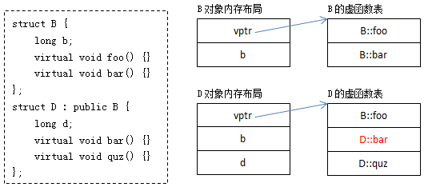
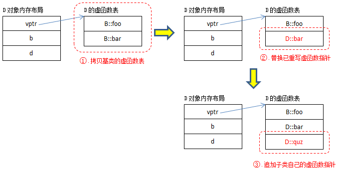
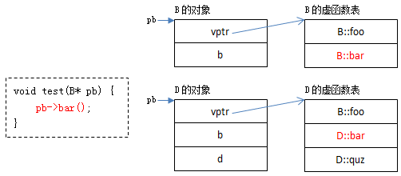

<!DOCTYPE HTML>
<html lang="zh-CN">
<head><meta name="generator" content="Hexo 3.8.0">
    <!--Setting-->
    <meta charset="UTF-8">
    <meta name="viewport" content="width=device-width, user-scalable=no, initial-scale=1.0, maximum-scale=1.0, minimum-scale=1.0">
    <meta http-equiv="X-UA-Compatible" content="IE=Edge,chrome=1">
    <meta http-equiv="Cache-Control" content="no-siteapp">
    <meta http-equiv="Cache-Control" content="no-transform">
    <meta name="renderer" content="webkit|ie-comp|ie-stand">
    <meta name="apple-mobile-web-app-capable" content="我的博客 - blog">
    <meta name="apple-mobile-web-app-status-bar-style" content="black">
    <meta name="format-detection" content="telephone=no,email=no,adress=no">
    <meta name="browsermode" content="application">
    <meta name="screen-orientation" content="portrait">
    <link rel="dns-prefetch" href="https://lives.xtcgch.ink">
    <!--SEO-->

<meta name="description" content="脑容量不够，笔记来凑">


<meta name="robots" content="all">
<meta name="google" content="all">
<meta name="googlebot" content="all">
<meta name="verify" content="all">
    <!--Title-->


<title>面试之C++篇 | 我的博客 - blog</title>


    <link rel="alternate" href="/atom.xml" title="我的博客 - blog" type="application/atom+xml">


    <link rel="icon" href="https://blog.xtcgch.ink/img/background/海绵宝宝.ico">

    


<link rel="stylesheet" href="/css/bootstrap.min.css?rev=3.3.7">
<link rel="stylesheet" href="/css/font-awesome.min.css?rev=4.5.0">
<link rel="stylesheet" href="/css/style.css?rev=@@hash">


    


    

</head>

</html>
<!--[if lte IE 8]>
<style>
    html{ font-size: 1em }
</style>
<![endif]-->
<!--[if lte IE 9]>
<div style="ie">你使用的浏览器版本过低，为了你更好的阅读体验，请更新浏览器的版本或者使用其他现代浏览器，比如Chrome、Firefox、Safari等。</div>
<![endif]-->

<body>
    <header class="main-header" style="background-image:url(https://blog.xtcgch.ink/img/head-bg.jpg)">
    <div class="main-header-box">
        <a class="header-avatar" href="/" title="unistd68">
            
        </a>
        <div class="branding">
        	<!--<h2 class="text-hide">Snippet主题,从未如此简单有趣</h2>-->
            
                <h2> 脑容量不够，笔记来凑 </h2>
            
    	</div>
    </div>
</header>
    <nav class="main-navigation">
    <div class="container">
        <div class="row">
            <div class="col-sm-12">
                <div class="navbar-header"><span class="nav-toggle-button collapsed pull-right" data-toggle="collapse" data-target="#main-menu" id="mnav">
                    <span class="sr-only"></span>
                        <i class="fa fa-bars"></i>
                    </span>
                    <a class="navbar-brand" href="https://lives.xtcgch.ink">我的博客 - blog</a>
                </div>
                <div class="collapse navbar-collapse" id="main-menu">
                    <ul class="menu">
                        
                            <li role="presentation" class="text-center">
                                <a href="https://blog.xtcgch.ink/"><i class="fa "></i>主页</a>
                            </li>
                        
                            <li role="presentation" class="text-center">
                                <a href="https://blog.xtcgch.ink/categories/原理/"><i class="fa "></i>原理</a>
                            </li>
                        
                            <li role="presentation" class="text-center">
                                <a href="https://blog.xtcgch.ink/categories/代码/"><i class="fa "></i>代码</a>
                            </li>
                        
                            <li role="presentation" class="text-center">
                                <a href="https://blog.xtcgch.ink/categories/开源/"><i class="fa "></i>开源</a>
                            </li>
                        
                            <li role="presentation" class="text-center">
                                <a href="https://blog.xtcgch.ink/categories/面试/"><i class="fa "></i>面试</a>
                            </li>
                        
                            <li role="presentation" class="text-center">
                                <a href="https://blog.xtcgch.ink/categories/其他/"><i class="fa "></i>其他</a>
                            </li>
                        
                            <li role="presentation" class="text-center">
                                <a href="https://blog.xtcgch.ink/archives/"><i class="fa "></i>时间轴</a>
                            </li>
                        
                    </ul>
                </div>
            </div>
        </div>
    </div>
</nav>
    <section class="content-wrap">
        <div class="container">
            <div class="row">
                <main class="col-md-8 main-content m-post">
                    <p id="process"></p>
<article class="post">
    <div class="post-head">
        <h1 id="面试之C++篇">
            
	            面试之C++篇
            
        </h1>
        <div class="post-meta">
    
    
    <span class="categories-meta fa-wrap">
        <i class="fa fa-folder-open-o"></i>
        <a href="https://blog.xtcgch.ink/categories/面试">
            面试
        </a>
    </span>
    

    
    <span class="fa-wrap">
        <i class="fa fa-tags"></i>
        <span class="tags-meta">
            
                
                    <a href="https://blog.xtcgch.ink/tags/C++" title="C++">
                        C++
                    </a>
                
                    <a href="https://blog.xtcgch.ink/tags/面试" title="面试">
                        面试
                    </a>
                
            
        </span>
    </span>
    

    
        
        <span class="fa-wrap">
            <i class="fa fa-clock-o"></i>
            <span class="date-meta">2021/09/09</span>
        </span>
        
    
</div>

            
            
    </div>
    
    <div class="post-body post-content">
        <p><strong>摘要：</strong>带着问题来学基础是最高效的方式！</p>
<a id="more"></a>
<hr>
<h1 id="脑图"><a href="#脑图" class="headerlink" title="脑图"></a>脑图</h1><p></p>
<hr>
<h2 id="目录"><a href="#目录" class="headerlink" title="目录"></a><table><tr><td bgcolor="#C7C7C7">目录</td></tr></table></h2><p><a href="#基础篇">★★★ 一、基础篇 ★★★</a></p>
<ul>
<li><a href="#1.1">1 map和set有什么区别，分别又是怎么实现的</a></li>
<li><a href="#1.2">2 STL中MAP数据存放形式</a></li>
<li><a href="#1.3">3 epoll原理</a></li>
<li><a href="#1.4">4 malloc的原理，另外brk系统调用和mmap系统调用的作用分别是什么</a></li>
<li><a href="#1.5">5 C++的内存管理</a></li>
<li><a href="#1.6">6 C++的内存泄漏</a></li>
<li><a href="#1.7">7 什么时候会发生段错误</a></li>
<li><a href="#1.8">8 什么是memory leak，也就是内存泄漏</a></li>
<li><a href="#1.9">9 C++11有哪些新特性</a></li>
<li><a href="#1.10">10 并发(concurrency)和并行(parallelism)</a></li>
<li><a href="#1.11">11 单核机器上写多线程程序，是否需要考虑加锁</a></li>
<li><a href="#1.12">12 死锁发生的条件以及如何解决死锁</a></li>
<li><a href="#1.13">13 操作系统中的结构体对齐，字节对齐</a></li>
<li><a href="#1.14">14 虚函数的实现的基本原理</a></li>
<li><a href="#1.15">15 static关键字的作用</a></li>
<li><a href="#1.16">16 软硬链接</a></li>
<li><a href="#1.17">17 函数指针</a></li>
<li><a href="#1.18">18 设计模式</a></li>
<li><a href="#1.19">19 数据结构</a></li>
<li><a href="#1.20">20 各种排序算法</a></li>
<li><a href="#1.21">21 二叉树定理</a></li>
<li><a href="#1.22">22 线程锁</a></li>
<li><a href="#1.23">23 STL</a></li>
<li><a href="#1.24">24 为什么析构函数要是虚函数</a></li>
<li><a href="#1.25">25 构造函数可以是虚函数吗</a></li>
<li><a href="#1.26">26 new和malloc的原理和区别</a></li>
<li><a href="#1.27">27 手动实现strcpy</a></li>
<li><a href="#1.28">28 C++对象内存布局</a></li>
<li><a href="#1.29">29 虚函数多态机制</a></li>
<li><a href="#1.30">30 线程和进程的区别</a></li>
<li><a href="#1.31">31 僵尸进程</a></li>
<li><a href="#1.32">32 重载与多态的区别</a></li>
<li><a href="#1.33">33 内存管理</a></li>
<li><a href="#1.34">34 RAII 机制</a></li>
<li><a href="#1.35">35 Sizeof 考察</a></li>
<li><a href="#1.36">36 union的内存分配</a></li>
<li><a href="#1.37">37 进程之间调度</a></li>
<li><a href="#1.38">38 进程间通信</a></li>
<li><a href="#1.39">39 线程间通信</a></li>
<li><a href="#1.40">40 进程的状态，以及进程生命周期流程</a></li>
<li><a href="#1.41">41 forward和move的区别</a></li>
<li><a href="#1.42">42 一个指针占多少空间</a></li>
<li><a href="#1.43">43 构造函数和析构函数可以是虚函数</a></li>
<li><a href="#1.44">44 new和delete可以重载吗</a></li>
<li><a href="#1.45">45 STL是用于解决什么样的问题？用范式上讲讲</a></li>
<li><a href="#1.46">46 高并发采用什么模型？redis的reactor架构详细讲一下</a></li>
<li><a href="#1.47">47 二分查找</a></li>
<li><a href="#1.48">48 C++98和C++11两个版本的枚举类型，分别描述一下</a></li>
<li><a href="#1.49">49 结构体和联合体的区别</a></li>
<li><a href="#1.50">50 结构体的位域 </a></li>
<li><a href="#1.51">51 inline函数优点、缺点</a></li>
<li><a href="#1.52">52 const作用</a></li>
<li><a href="#1.53">53 constexptr的作用</a></li>
<li><a href="#1.54">54 explicit的作用</a></li>
<li><a href="#1.55">55 C++11 3个智能指针</a></li>
<li><a href="#1.56">56 左值引用和右值引用的区别</a></li>
<li><a href="#1.57">57 移动语义</a></li>
<li><a href="#1.58">58 空悬指针极其危害</a></li>
<li><a href="#1.59">59 怎么检查内存泄漏</a></li>
<li><a href="#1.60">60 线程池的工作线程如何工作</a></li>
<li><a href="#1.61">61 线程同步的方式</a></li>
<li><a href="#1.62">62 条件变量用在什么场景？和互斥锁的区别是</a></li>
<li><a href="#1.63">63 多线程和多进程的区别？为什么不用多进程</a></li>
<li><a href="#1.64">64 定时器是如何实现的？堆和红黑树的区别</a></li>
<li><a href="#1.65">65 常见的应用层协议</a></li>
<li><a href="#1.66">66 输入URL后发生的过程</a></li>
<li><a href="#1.67">67 TCP的拥塞控制？TCP的一个拥塞控制窗口是多少个字节</a></li>
<li><a href="#1.68">68 TCP如何直接关闭连接？如何不经历TIME-WAIT状态</a></li>
<li><a href="#1.69">69 内存泄漏和内存溢出的区别</a></li>
<li><a href="#1.70">70 编程时你如何定位内存泄漏(黑盒下)</a></li>
<li><a href="#1.71">71 B树和B+树的区别</a></li>
<li><a href="#1.72">72 指针常量和常量指针</a></li>
<li><a href="#1.73">73 子类构造函数和析构函数的执行顺序</a></li>
<li><a href="#1.74">74 sizeof和strlen</a></li>
<li><a href="#1.75">75 排序算法中稳定排序算法，什么是稳定</a></li>
<li><a href="#1.76">76 二叉树有哪几种遍历方式</a></li>
<li><a href="#1.77">77 使用锁是有开销的,如何改进</a></li>
<li><a href="#1.78">78 C++一个空类的大小</a></li>
<li><a href="#1.79">79 STL中的容器是线程安全的吗</a></li>
<li><a href="#1.80">80 STL中的智能指针是线程安全的吗</a></li>
<li><a href="#1.81">81 常用的单元测试库</a></li>
<li><a href="#1.82">82 #pragma指令与#ifndef指令</a></li>
<li><a href="#1.83">83 mutable的作用</a></li>
<li><a href="#1.84">84 typeid的作用</a></li>
<li><a href="#1.85">85 virtual的作用</a></li>
<li><a href="#1.86">86 extern的作用</a></li>
<li><a href="#1.87">87 using的作用</a></li>
<li><a href="#1.88">88 static的作用</a></li>
<li><a href="#1.89">89 register的作用</a></li>
<li><a href="#1.90">90 常见的*_cast</a></li>
</ul>
<p><a href="#进阶篇">★★★ 二、进阶篇 ★★★</a></p>
<ul>
<li><a href="#2.1">1 无锁内存池、无锁队列和顺序锁</a></li>
<li><a href="#2.2">2 内存池</a></li>
<li><a href="#2.3">3 volatile的作用</a></li>
<li><a href="#2.4">4 gcc编译优化-O0 -O1 -O2 -O3 -OS解析</a></li>
</ul>
<hr>
<h1 id="★★★-一、基础篇-★★★"><a href="#★★★-一、基础篇-★★★" class="headerlink" title="★★★ 一、基础篇 ★★★"></a><div align="center" id="基础篇"><font size="70">★★★ 一、基础篇 ★★★</font></div></h1><h2 id="1-map和set有什么区别，分别又是怎么实现的"><a href="#1-map和set有什么区别，分别又是怎么实现的" class="headerlink" title="1 map和set有什么区别，分别又是怎么实现的"></a><table><tr><td bgcolor="#C7C7C7" id="1.1">1 map和set有什么区别，分别又是怎么实现的</td></tr></table></h2><ol>
<li><p>共同点<br>map和set都是C++的关联容器，其底层实现都是红黑树（RB-Tree）。由于 map 和set所开放的各种操作接口，RB-tree 也都提供了，所以几乎所有的 map 和set的操作行为，都只是转调 RB-tree 的操作行为。</p>
</li>
<li><p>区别</p>
</li>
</ol>
<ul>
<li><p>map中的元素是key-value（关键字—值）对：关键字起到索引的作用，值则表示与索引相关联的数据；Set与之相对就是关键字的简单集合，set中每个元素只包含一个关键字。</p>
</li>
<li><p>set的迭代器是const的，不允许修改元素的值；map允许修改value，但不允许修改key。其原因是因为map和set是根据关键字排序来保证其有序性的，如果允许修改key的话，那么首先需要删除该键，然后调节平衡，再插入修改后的键值，调节平衡，如此一来，严重破坏了map和set的结构，导致iterator失效，不知道应该指向改变前的位置，还是指向改变后的位置。所以STL中将set的迭代器设置成const，不允许修改迭代器的值；而map的迭代器则不允许修改key值，允许修改value值。</p>
</li>
<li><p>map支持下标操作，set不支持下标操作。map可以用key做下标，map的下标运算符[ ]将关键码作为下标去执行查找，如果关键码不存在，则插入一个具有该关键码和mapped_type类型默认值的元素至map中，因此下标运算符[ ]在map应用中需要慎用，const_map不能用，只希望确定某一个关键值是否存在而不希望插入元素时也不应该使用，mapped_type类型没有默认值也不应该使用。如果find能解决需要，尽可能用find。</p>
</li>
</ul>
<hr>
<h2 id="2-STL中MAP数据存放形式"><a href="#2-STL中MAP数据存放形式" class="headerlink" title="2 STL中MAP数据存放形式"></a><table><tr><td bgcolor="#C7C7C7" id="1.2">2 STL中MAP数据存放形式</td></tr></table></h2><ol>
<li>有序的MAP是红黑树，unordered map底层结构是哈希表</li>
</ol>
<ul>
<li>Map映射，map 的所有元素都是 pair，同时拥有实值（value）和键值（key）。pair 的第一元素被视为键值，第二元素被视为实值。所有元素都会根据元素的键值自动被排序。不允许键值重复。</li>
</ul>
<p>底层实现：红黑树</p>
<p>适用场景：有序键值对不重复映射</p>
<p>unordered map：最长的无重复子字符串</p>
<ul>
<li>Multimap多重映射。multimap 的所有元素都是 pair，同时拥有实值（value）和键值（key）。pair 的第一元素被视为键值，第二元素被视为实值。所有元素都会根据元素的键值自动被排序。允许键值重复。</li>
</ul>
<p>底层实现：红黑树</p>
<p>适用场景：有序键值对可重复映射</p>
<hr>
<h2 id="3-epoll原理"><a href="#3-epoll原理" class="headerlink" title="3 epoll原理"></a><table><tr><td bgcolor="#C7C7C7" id="1.3">3 epoll原理</td></tr></table></h2><p>调用顺序：</p>
<figure class="highlight plain"><table><tr><td class="gutter"><pre><span class="line">1</span><br><span class="line">2</span><br><span class="line">3</span><br></pre></td><td class="code"><pre><span class="line">int epoll_create(int size);</span><br><span class="line">int epoll_ctl(int epfd, int op, int fd, struct epoll_event *event);</span><br><span class="line">int epoll_wait(int epfd, struct epoll_event *events,int maxevents, int timeout);</span><br></pre></td></tr></table></figure>
<ol>
<li>首先创建一个epoll对象</li>
<li>使用epoll_ctl对这个对象进行操作，把需要监控的描述添加进去，这些描述如将会以epoll_event结构体的形式组成一颗红黑树</li>
<li>阻塞在epoll_wait，进入大循环，当某个fd上有事件发生时，内核将会把其对应的结构体放入到一个链表中，返回有事件发生的链表</li>
</ol>
<hr>
<h2 id="4-malloc的原理，另外brk系统调用和mmap系统调用的作用分别是什么"><a href="#4-malloc的原理，另外brk系统调用和mmap系统调用的作用分别是什么" class="headerlink" title="4 malloc的原理，另外brk系统调用和mmap系统调用的作用分别是什么"></a><table><tr><td bgcolor="#C7C7C7" id="1.4">4 malloc的原理，另外brk系统调用和mmap系统调用的作用分别是什么</td></tr></table></h2><p>Malloc函数用于动态分配内存。为了减少内存碎片和系统调用的开销，malloc其采用内存池的方式，先申请大块内存作为堆区，然后将堆区分为多个内存块，以块作为内存管理的基本单位。当用户申请内存时，直接从堆区分配一块合适的空闲块。<br>Malloc采用隐式链表结构将堆区分成连续的、大小不一的块，包含已分配块和未分配块；<br>同时malloc采用显示链表结构来管理所有的空闲块，即使用一个双向链表将空闲块连接起来，每一个空闲块记录了一个连续的、未分配的地址。<br>当进行内存分配时，Malloc会通过隐式链表遍历所有的空闲块，选择满足要求的块进行分配；当进行内存合并时，malloc采用边界标记法，根据每个块的前后块是否已经分配来决定是否进行块合并。</p>
<p>Malloc在申请内存时，一般会通过brk或者mmap系统调用进行申请。其中当申请内存小于128K时，会使用系统函数brk在堆区中分配；而当申请内存大于128K时，会使用系统函数mmap在映射区分配。</p>
<hr>
<h2 id="5-C-的内存管理"><a href="#5-C-的内存管理" class="headerlink" title="5 C++的内存管理"></a><table><tr><td bgcolor="#C7C7C7" id="1.5">5 C++的内存管理</td></tr></table></h2><p>在C++中，虚拟内存分为代码段、数据段、BSS段、堆区、文件映射区以及栈区六部分。</p>
<p>代码段:包括只读存储区和文本区，其中只读存储区存储字符串常量，文本区存储程序的机器代码。</p>
<p>数据段：存储程序中已初始化的全局变量和静态变量</p>
<p>bss 段：存储未初始化的全局变量和静态变量（局部+全局），以及所有被初始化为0的全局变量和静态变量。</p>
<p>堆区：调用new/malloc函数时在堆区动态分配内存，同时需要调用delete/free来手动释放申请的内存。</p>
<p>映射区:存储动态链接库以及调用mmap函数进行的文件映射</p>
<p>栈：使用栈空间存储函数的返回地址、参数、局部变量、返回值</p>
<hr>
<h2 id="6-C-的内存泄漏"><a href="#6-C-的内存泄漏" class="headerlink" title="6 C++的内存泄漏"></a><table><tr><td bgcolor="#C7C7C7" id="1.6">6 C++的内存泄漏</td></tr></table></h2><p>内存泄漏通常是由于调用了malloc/new等内存申请的操作，但是缺少了对应的free/delete。</p>
<ol>
<li>linux环境下的内存泄漏检查工具Valgrind</li>
<li>在写代码时可以添加内存申请和释放的统计功能，统计当前申请和释放的内存是否一致</li>
</ol>
<hr>
<h2 id="7-什么时候会发生段错误"><a href="#7-什么时候会发生段错误" class="headerlink" title="7 什么时候会发生段错误"></a><table><tr><td bgcolor="#C7C7C7" id="1.7">7 什么时候会发生段错误</td></tr></table></h2><ol>
<li>使用野指针</li>
<li>试图修改字符串常量</li>
</ol>
<hr>
<h2 id="8-什么是memory-leak，也就是内存泄漏"><a href="#8-什么是memory-leak，也就是内存泄漏" class="headerlink" title="8 什么是memory leak，也就是内存泄漏"></a><table><tr><td bgcolor="#C7C7C7" id="1.8">8 什么是memory leak，也就是内存泄漏</td></tr></table></h2><p>内存泄漏(memory leak)是指由于疏忽或错误造成了程序未能释放掉不再使用的内存的情况。内存泄漏并非指内存在物理上的消失，而是应用程序分配某段内存后，由于设计错误，失去了对该段内存的控制，因而造成了内存的浪费。<br>内存泄漏的分类：</p>
<ol>
<li><p>堆内存泄漏 （Heap leak）。对内存指的是程序运行中根据需要分配通过malloc,realloc new等从堆中分配的一块内存，再是完成后必须通过调用对应的 free或者delete 删掉。如果程序的设计的错误导致这部分内存没有被释放，那么此后这块内存将不会被使用，就会产生Heap Leak.</p>
</li>
<li><p>系统资源泄露（Resource Leak）。主要指程序使用系统分配的资源比如 Bitmap,handle ,SOCKET等没有使用相应的函数释放掉，导致系统资源的浪费，严重可导致系统效能降低，系统运行不稳定。</p>
</li>
<li><p>没有将基类的析构函数定义为虚函数。当基类指针指向子类对象时，如果基类的析构函数不是virtual，那么子类的析构函数将不会被调用，子类的资源没有正确是释放，因此造成内存泄露。</p>
</li>
</ol>
<hr>
<h2 id="9-C-11有哪些新特性"><a href="#9-C-11有哪些新特性" class="headerlink" title="9 C++11有哪些新特性"></a><table><tr><td bgcolor="#C7C7C7" id="1.9">9 C++11有哪些新特性</td></tr></table></h2><hr>
<h2 id="10-并发-concurrency-和并行-parallelism"><a href="#10-并发-concurrency-和并行-parallelism" class="headerlink" title="10 并发(concurrency)和并行(parallelism)"></a><table><tr><td bgcolor="#C7C7C7" id="1.10">10 并发(concurrency)和并行(parallelism)</td></tr></table></h2><p>并发（concurrency）：指宏观上看起来两个程序在同时运行，比如说在单核cpu上的多任务。但是从微观上看两个程序的指令是交织着运行的，你的指令之间穿插着我的指令，我的指令之间穿插着你的，在单个周期内只运行了一个指令。这种并发并不能提高计算机的性能，只能提高效率。</p>
<p>并行（parallelism）：指严格物理意义上的同时运行，比如多核cpu，两个程序分别运行在两个核上，两者之间互不影响，单个周期内每个程序都运行了自己的指令，也就是运行了两条指令。这样说来并行的确提高了计算机的效率。所以现在的cpu都是往多核方面发展。</p>
<hr>
<h2 id="11-单核机器上写多线程程序，是否需要考虑加锁"><a href="#11-单核机器上写多线程程序，是否需要考虑加锁" class="headerlink" title="11 单核机器上写多线程程序，是否需要考虑加锁"></a><table><tr><td bgcolor="#C7C7C7" id="1.11">11 单核机器上写多线程程序，是否需要考虑加锁</td></tr></table></h2><p>在单核机器上写多线程程序，仍然需要线程锁。因为线程锁通常用来实现线程的同步和通信。在单核机器上的多线程程序，仍然存在线程同步的问题。因为在抢占式操作系统中，通常为每个线程分配一个时间片，当某个线程时间片耗尽时，操作系统会将其挂起，然后运行另一个线程。如果这两个线程共享某些数据，不使用线程锁的前提下，可能会导致共享数据修改引起冲突。</p>
<p>例如变量自增操作，++i，并非原子操作，汇编层面分为3步：获取变量值，变量值+1，保存。</p>
<hr>
<h2 id="12-死锁发生的条件以及如何解决死锁"><a href="#12-死锁发生的条件以及如何解决死锁" class="headerlink" title="12 死锁发生的条件以及如何解决死锁"></a><table><tr><td bgcolor="#C7C7C7" id="1.12">12 死锁发生的条件以及如何解决死锁</td></tr></table></h2><p>死锁是指两个或两个以上进程在执行过程中，因争夺资源而造成的相互等待的现象。死锁发生的四个必要条件如下：</p>
<p>互斥条件：进程对所分配到的资源不允许其他进程访问，若其他进程访问该资源，只能等待，直至占有该资源的进程使用完成后释放该资源；</p>
<p>请求和保持条件：进程获得一定的资源后，又对其他资源发出请求，但是该资源可能被其他进程占有，此时请求阻塞，但该进程不会释放自己已经占有的资源</p>
<p>不可剥夺条件：进程已获得的资源，在未完成使用之前，不可被剥夺，只能在使用后自己释放</p>
<p>环路等待条件：进程发生死锁后，必然存在一个进程-资源之间的环形链</p>
<p>解决死锁的方法即破坏上述四个条件之一，主要方法如下：</p>
<p>资源一次性分配，从而剥夺请求和保持条件</p>
<p>可剥夺资源：即当进程新的资源未得到满足时，释放已占有的资源，从而破坏不可剥夺的条件</p>
<p>资源有序分配法：系统给每类资源赋予一个序号，每个进程按编号递增的请求资源，释放则相反，从而破坏环路等待的条件</p>
<hr>
<h2 id="13-操作系统中的结构体对齐，字节对齐"><a href="#13-操作系统中的结构体对齐，字节对齐" class="headerlink" title="13 操作系统中的结构体对齐，字节对齐"></a><table><tr><td bgcolor="#C7C7C7" id="1.13">13 操作系统中的结构体对齐，字节对齐</td></tr></table></h2><ol>
<li>原因：</li>
</ol>
<ul>
<li>平台原因（移植原因）：不是所有的硬件平台都能访问任意地址上的任意数据的；某些硬件平台只能在某些地址处取某些特定类型的数据，否则抛出硬件异常。</li>
<li>性能原因：数据结构（尤其是栈）应该尽可能地在自然边界上对齐。原因在于，为了访问未对齐的内存，处理器需要作两次内存访问；而对齐的内存访问仅需要一次访问。</li>
</ul>
<ol start="2">
<li>规则</li>
</ol>
<ul>
<li>数据成员对齐规则：结构(struct)(或联合(union))的数据成员，第一个数据成员放在offset为0的地方，以后每个数据成员的对齐按照#pragma pack指定的数值和这个数据成员自身长度中，比较小的那个进行。</li>
<li>结构(或联合)的整体对齐规则：在数据成员完成各自对齐之后，结构(或联合)本身也要进行对齐，对齐将按照#pragma pack指定的数值和结构(或联合)最大数据成员长度中，比较小的那个进行。</li>
<li>结构体作为成员：如果一个结构里有某些结构体成员，则结构体成员要从其内部最大元素大小的整数倍地址开始存储。</li>
</ul>
<ol start="3">
<li>定义结构体对齐</li>
</ol>
<p>可以通过预编译命令#pragma pack(n)，n=1,2,4,8,16来改变这一系数，其中的n就是指定的“对齐系数”。</p>
<ol start="4">
<li>举例</li>
</ol>
<figure class="highlight plain"><table><tr><td class="gutter"><pre><span class="line">1</span><br><span class="line">2</span><br><span class="line">3</span><br><span class="line">4</span><br><span class="line">5</span><br><span class="line">6</span><br><span class="line">7</span><br><span class="line">8</span><br><span class="line">9</span><br><span class="line">10</span><br><span class="line">11</span><br><span class="line">12</span><br><span class="line">13</span><br><span class="line">14</span><br><span class="line">15</span><br></pre></td><td class="code"><pre><span class="line">#pragma pack(2)</span><br><span class="line"></span><br><span class="line">struct AA &#123;</span><br><span class="line"></span><br><span class="line">	int a;       //长度4 &gt; 2 按2对齐；偏移量为0；存放位置区间[0,3]</span><br><span class="line"></span><br><span class="line">	char b;  //长度1 &lt; 2 按1对齐；偏移量为4；存放位置区间[4]</span><br><span class="line"></span><br><span class="line">	short c;     //长度2 = 2 按2对齐；偏移量要提升到2的倍数6；存放位置区间[6,7]</span><br><span class="line"></span><br><span class="line">	char d;  //长度1 &lt; 2 按1对齐；偏移量为7；存放位置区间[8]；共九个字节</span><br><span class="line"></span><br><span class="line">&#125;;</span><br><span class="line"></span><br><span class="line">#pragma pack()</span><br></pre></td></tr></table></figure>
<hr>
<h2 id="14-虚函数的实现的基本原理"><a href="#14-虚函数的实现的基本原理" class="headerlink" title="14 虚函数的实现的基本原理"></a><table><tr><td bgcolor="#C7C7C7" id="1.14">14 虚函数的实现的基本原理</td></tr></table></h2><ol>
<li>单继承</li>
</ol>
<p></p>
<ol start="2">
<li>虚函数表构造过程</li>
</ol>
<p></p>
<ol start="3">
<li>虚函数调用过程</li>
</ol>
<p></p>
<ol start="4">
<li>多重继承</li>
</ol>
<p></p>
<h2 id="15-static关键字的作用"><a href="#15-static关键字的作用" class="headerlink" title="15 static关键字的作用"></a><table><tr><td bgcolor="#C7C7C7" id="1.15">15 static关键字的作用</td></tr></table></h2><ol>
<li>面向过程设计中的static</li>
</ol>
<p>1.1 全局静态变量</p>
<ul>
<li>变量在全局数据区分配内存</li>
<li>未经初始化的静态全局变量会被程序自动初始化为0（自动变量的值是随机的，除非它被显式初始化）</li>
<li>静态全局变量在声明它的整个文件都是可见的，而在文件之外是不可见的</li>
</ul>
<p>1.2 局部静态变量</p>
<ul>
<li>变量在全局数据区分配内存</li>
<li>静态局部变量在程序执行到该对象的声明处时被首次初始化，即以后的函数调用不再进行初始化；</li>
<li>静态局部变量一般在声明处初始化，如果没有显式初始化，会被程序自动初始化为0；</li>
<li>它始终驻留在全局数据区，直到程序运行结束。但其作用域为局部作用域，当定义它的函数或语句块结束时，其作用域随之结束；</li>
</ul>
<p>1.3 静态函数</p>
<ul>
<li>静态函数不能被其它文件所用</li>
<li>其它文件中可以定义相同名字的函数，不会发生冲突</li>
</ul>
<ol start="2">
<li>面向对象的static关键字（类中的static关键字）</li>
</ol>
<p>2.1 类的静态数据成员</p>
<p>2.2 类的静态成员函数</p>
<ul>
<li>出现在类体外的函数定义不能指定关键字static</li>
<li>静态成员之间可以相互访问，包括静态成员函数访问静态数据成员和访问静态成员函数</li>
<li>非静态成员函数可以任意地访问静态成员函数和静态数据成员</li>
<li>静态成员函数不能访问非静态成员函数和非静态数据成员</li>
<li>由于没有this指针的额外开销，因此静态成员函数与类的全局函数相比速度上会有少许的增长</li>
<li>调用静态成员函数，可以用成员访问操作符(.)和(-&gt;)为一个类的对象或指向类对象的指针调用静态成员函数</li>
</ul>
<hr>
<h2 id="16-软硬链接"><a href="#16-软硬链接" class="headerlink" title="16 软硬链接"></a><table><tr><td bgcolor="#C7C7C7" id="1.16">16 软硬链接</td></tr></table></h2><p><strong>inode是什么</strong></p>
<p>理解inode，要从文件储存说起。</p>
<p>文件储存在硬盘上，硬盘的最小存储单位叫做”扇区”（Sector）。每个扇区储存512字节（相当于0.5KB）。</p>
<p>操作系统读取硬盘的时候，不会一个个扇区地读取，这样效率太低，而是一次性连续读取多个扇区，即一次性读取一个”块”（block）。这种由多个扇区组成的”块”，是文件存取的最小单位。”块”的大小，最常见的是4KB，即连续八个 sector组成一个 block。</p>
<p>文件数据都储存在”块”中，那么很显然，我们还必须找到一个地方储存文件的元信息，比如文件的创建者、文件的创建日期、文件的大小等等。这种储存文件元信息的区域就叫做inode，中文译名为”索引节点”。</p>
<p>每一个文件都有对应的inode，里面包含了与该文件有关的一些信息。</p>
<p><strong>inode的内容</strong></p>
<p>inode包含文件的元信息，具体来说有以下内容：</p>
<ul>
<li>文件的字节数</li>
<li>文件拥有者的User ID</li>
<li>文件的Group ID</li>
<li>文件的读、写、执行权限</li>
<li>文件的时间戳，共有三个：ctime指inode上一次变动的时间，mtime指文件内容上一次变动的时间，atime指文件上一次打开的时间。</li>
<li>链接数，即有多少文件名指向这个inode</li>
<li>文件数据block的位置</li>
</ul>
<p>可以用stat命令，查看某个文件的inode信息：<br><figure class="highlight plain"><table><tr><td class="gutter"><pre><span class="line">1</span><br></pre></td><td class="code"><pre><span class="line">stat example.txt</span><br></pre></td></tr></table></figure></p>
<p><strong>inode的大小</strong></p>
<p>inode也会消耗硬盘空间，所以硬盘格式化的时候，操作系统自动将硬盘分成两个区域。一个是数据区，存放文件数据；另一个是inode区（inode table），存放inode所包含的信息。</p>
<p>每个inode节点的大小，一般是128字节或256字节。inode节点的总数，在格式化时就给定，一般是每1KB或每2KB就设置一个inode。假定在一块1GB的硬盘中，每个inode节点的大小为128字节，每1KB就设置一个inode，那么inode table的大小就会达到128MB，占整块硬盘的12.8%。</p>
<p>查看每个硬盘分区的inode总数和已经使用的数量，可以使用df命令。<br><figure class="highlight plain"><table><tr><td class="gutter"><pre><span class="line">1</span><br></pre></td><td class="code"><pre><span class="line">　　df -i</span><br></pre></td></tr></table></figure></p>
<p>查看每个inode节点的大小，可以用如下命令：</p>
<figure class="highlight plain"><table><tr><td class="gutter"><pre><span class="line">1</span><br></pre></td><td class="code"><pre><span class="line">　sudo dumpe2fs -h /dev/hda | grep &quot;Inode size&quot;</span><br></pre></td></tr></table></figure>
<p><strong>inode号码</strong></p>
<p>每个inode都有一个号码，操作系统用inode号码来识别不同的文件。</p>
<p>这里值得重复一遍，Unix/linux系统内部不使用文件名，而使用inode号码来识别文件。对于系统来说，文件名只是inode号码便于识别的别称或者绰号。</p>
<p>表面上，用户通过文件名，打开文件。实际上，系统内部这个过程分成三步：首先，系统找到这个文件名对应的inode号码；其次，通过inode号码，获取inode信息；最后，根据inode信息，找到文件数据所在的block，读出数据。</p>
<p>使用ls -i命令，可以看到文件名对应的inode号码：</p>
<figure class="highlight plain"><table><tr><td class="gutter"><pre><span class="line">1</span><br></pre></td><td class="code"><pre><span class="line">ls -i example.txt</span><br></pre></td></tr></table></figure>
<p><strong>硬链接</strong></p>
<ul>
<li>具有相同inode节点号的多个文件互为硬链接文件；</li>
<li>删除硬链接文件或者删除源文件任意之一，文件实体并未被删除；</li>
<li>只有删除了源文件和所有对应的硬链接文件，文件实体才会被删除；</li>
<li>硬链接文件是文件的另一个入口；</li>
<li>可以通过给文件设置硬链接文件来防止重要文件被误删；</li>
<li>创建硬链接命令 ln 源文件 硬链接文件；</li>
<li>硬链接文件是普通文件，可以用rm删除；</li>
<li>对于静态文件（没有进程正在调用），当硬链接数为0时文件就被删除。注意：如果有进程正在调用，则无法删除或者即使文件名被删除但空间不会释放。</li>
</ul>
<p><strong>软链接</strong></p>
<ul>
<li>软链接类似windows系统的快捷方式；</li>
<li>软链接里面存放的是源文件的路径，指向源文件；</li>
<li>删除源文件，软链接依然存在，但无法访问源文件内容；</li>
<li>软链接失效时一般是白字红底闪烁；</li>
<li>创建软链接命令 ln -s 源文件 软链接文件；</li>
<li>软链接和源文件是不同的文件，文件类型也不同，inode号也不同；</li>
<li>软链接的文件类型是“l”，可以用rm删除。</li>
</ul>
<p><strong>硬链接和软链接的区别</strong></p>
<ul>
<li>原理上，硬链接和源文件的inode节点号相同，两者互为硬链接。软连接和源文件的inode节点号不同，进而指向的block也不同，软连接block中存放了源文件的路径名。</li>
<li>实际上，硬链接和源文件是同一份文件，而软连接是独立的文件，类似于快捷方式，存储着源文件的位置信息便于指向。</li>
<li>使用限制上，不能对目录创建硬链接，不能对不同文件系统创建硬链接，不能对不存在的文件创建硬链接。可以对目录创建软连接，可以跨文件系统创建软连接，可以对不存在的文件创建软连接。</li>
</ul>
<p><strong>inode的特殊作用</strong></p>
<p>由于inode号码与文件名分离，这种机制导致了一些Unix/Linux系统特有的现象。</p>
<ul>
<li>有时，文件名包含特殊字符，无法正常删除。这时，直接删除inode节点，就能起到删除文件的作用。</li>
<li>移动文件或重命名文件，只是改变文件名，不影响inode号码。</li>
<li>打开一个文件以后，系统就以inode号码来识别这个文件，不再考虑文件名。因此，通常来说，系统无法从inode号码得知文件名。</li>
</ul>
<p>第3点使得软件更新变得简单，可以在不关闭软件的情况下进行更新，不需要重启。因为系统通过inode号码，识别运行中的文件，不通过文件名。更新的时候，新版文件以同样的文件名，生成一个新的inode，不会影响到运行中的文件。等到下一次运行这个软件的时候，文件名就自动指向新版文件，旧版文件的inode则被回收。</p>
<hr>
<h2 id="17-函数指针"><a href="#17-函数指针" class="headerlink" title="17 函数指针"></a><table><tr><td bgcolor="#C7C7C7" id="1.17">17 函数指针</td></tr></table></h2><p><strong>17.1 普通函数指针</strong></p>
<p><strong>17.2 静态函数指针</strong></p>
<p><strong>17.3 类的成员函数指针</strong></p>
<figure class="highlight plain"><table><tr><td class="gutter"><pre><span class="line">1</span><br><span class="line">2</span><br><span class="line">3</span><br><span class="line">4</span><br><span class="line">5</span><br><span class="line">6</span><br><span class="line">7</span><br><span class="line">8</span><br><span class="line">9</span><br><span class="line">10</span><br><span class="line">11</span><br><span class="line">12</span><br><span class="line">13</span><br><span class="line">14</span><br><span class="line">15</span><br><span class="line">16</span><br><span class="line">17</span><br><span class="line">18</span><br><span class="line">19</span><br><span class="line">20</span><br><span class="line">21</span><br><span class="line">22</span><br><span class="line">23</span><br></pre></td><td class="code"><pre><span class="line">#include &lt;iostream&gt;</span><br><span class="line"> </span><br><span class="line">using namespace std;</span><br><span class="line"> </span><br><span class="line">class A &#123;</span><br><span class="line"> </span><br><span class="line">public :</span><br><span class="line">  void test1() &#123; cout &lt;&lt; &quot;test&quot; &lt;&lt; endl; &#125;;</span><br><span class="line">public :</span><br><span class="line"> </span><br><span class="line">&#125;;</span><br><span class="line"> </span><br><span class="line">typedef void (A::*PFunc)();</span><br><span class="line"> </span><br><span class="line">int main() &#123;</span><br><span class="line">  A a;</span><br><span class="line">  PFunc f = &amp;(A::test1);</span><br><span class="line"> </span><br><span class="line">  (a.*f)();</span><br><span class="line"> </span><br><span class="line">  system(&quot;PAUSE&quot;);</span><br><span class="line">  return 0;</span><br><span class="line">&#125;</span><br></pre></td></tr></table></figure>
<p><strong>17.4 类的静态成员函数指针</strong></p>
<figure class="highlight plain"><table><tr><td class="gutter"><pre><span class="line">1</span><br><span class="line">2</span><br><span class="line">3</span><br><span class="line">4</span><br><span class="line">5</span><br><span class="line">6</span><br><span class="line">7</span><br><span class="line">8</span><br><span class="line">9</span><br><span class="line">10</span><br><span class="line">11</span><br><span class="line">12</span><br><span class="line">13</span><br><span class="line">14</span><br><span class="line">15</span><br><span class="line">16</span><br><span class="line">17</span><br><span class="line">18</span><br><span class="line">19</span><br><span class="line">20</span><br><span class="line">21</span><br><span class="line">22</span><br></pre></td><td class="code"><pre><span class="line">#include &lt;iostream&gt;</span><br><span class="line"> </span><br><span class="line">using namespace std;</span><br><span class="line"> </span><br><span class="line">class A &#123;</span><br><span class="line"> </span><br><span class="line">public :</span><br><span class="line">  static void test1() &#123; printf(&quot;test\n&quot;); &#125;;</span><br><span class="line">public :</span><br><span class="line"> </span><br><span class="line">&#125;;</span><br><span class="line"> </span><br><span class="line">typedef void (*PFunc)();</span><br><span class="line"> </span><br><span class="line">int main() &#123;</span><br><span class="line">  PFunc f = &amp;(A::test1);</span><br><span class="line"> </span><br><span class="line">  (*f)();</span><br><span class="line"> </span><br><span class="line">  system(&quot;PAUSE&quot;);</span><br><span class="line">  return 0;</span><br><span class="line">&#125;</span><br></pre></td></tr></table></figure>
<hr>
<h2 id="18-设计模式"><a href="#18-设计模式" class="headerlink" title="18 设计模式"></a><table><tr><td bgcolor="#C7C7C7" id="1.18">18 设计模式</td></tr></table></h2><p>23种设计模式</p>
<p><strong>设计模式的六大原则</strong></p>
<ul>
<li>单一职责原则</li>
<li>里氏替换原则</li>
<li>依赖倒置原则</li>
<li>接口隔离原则</li>
<li>迪米特法则（最少知道原则）</li>
<li>合成复用原则</li>
</ul>
<p><strong>设计模式的三大类</strong></p>
<ul>
<li>创建型模式:对类的实例化过程进行了抽象，能够将软件模块中对象的创建和对象的使用分离。<ul>
<li>工厂模式、抽象工厂模式、单例模式、建造者模式、原型模式</li>
</ul>
</li>
<li>结构型模式:关注于对象的组成以及对象之间的依赖关系，描述如何将类或者对象结合在一起形成更大的结构<ul>
<li>适配器模式、装饰者模式、代理模式、外观模式、桥接模式、组合模式、享元模式</li>
</ul>
</li>
<li>行为型模式:关注于对象的行为问题，是对在不同的对象之间划分责任和算法的抽象化；不仅仅关注类和对象的结构，而且重点关注它们之间的相互作用<ul>
<li>策略模式、模板方法模式、观察者模式、迭代器模式、责任链模式、命令模式、备忘录模式、状态模式、访问者模式、中介者模式、解释器模式</li>
</ul>
</li>
</ul>
<hr>
<h2 id="19-数据结构"><a href="#19-数据结构" class="headerlink" title="19 数据结构"></a><table><tr><td bgcolor="#C7C7C7" id="1.19">19 数据结构</td></tr></table></h2><hr>
<h2 id="20-各种排序算法"><a href="#20-各种排序算法" class="headerlink" title="20 各种排序算法"></a><table><tr><td bgcolor="#C7C7C7" id="1.20">20 各种排序算法</td></tr></table></h2><p>内部排序</p>
<p>外部排序</p>
<p>是否稳定？</p>
<hr>
<h2 id="21-二叉树定理"><a href="#21-二叉树定理" class="headerlink" title="21 二叉树定理"></a><table><tr><td bgcolor="#C7C7C7" id="1.21">21 二叉树定理</td></tr></table></h2><p>平衡二叉树(AVL)</p>
<p>红黑树</p>
<p>B+树</p>
<p>B树</p>
<hr>
<h2 id="22-线程锁"><a href="#22-线程锁" class="headerlink" title="22 线程锁"></a><table><tr><td bgcolor="#C7C7C7" id="1.22">22 线程锁</td></tr></table></h2><p><strong>互斥锁</strong></p>
<p>mutex</p>
<p><strong>自旋锁</strong></p>
<p><strong>读写锁</strong></p>
<p>以前是boost库，在C++17之后添加到std标准库中</p>
<p><strong>无锁</strong></p>
<p>CAS（compare and swap）无锁机制</p>
<p>（1）与锁相比，使用比较交换（下文简称CAS），由于其非阻塞性，它对死锁问题天生免疫，并且，线程间的相互影响也远远比基于锁的方式要小。更为重要的是，使用无锁的方式完全没有锁竞争带来的系统开销，也没有线程间频繁调度带来的开销，因此，它要比基于锁的方式拥有更优越的性能。</p>
<p>（2）无锁的好处：<br> 第一，在高并发的情况下，它比有锁的程序拥有更好的性能；<br> 第二，它天生就是死锁免疫的。<br> 就凭借这两个优势，就值得我们冒险尝试使用无锁的并发。</p>
<p>（3）CAS算法的过程是这样：它包含三个参数CAS(V,E,N):<br> V表示要更新的变量，E表示预期值，N表示新值。<br> 仅当V值等于E值时，才会将V的值设为N，<br> 如果V值和E值不同，则说明已经有其他线程做了更新，则当前线程什么都不做。<br> 最后，CAS返回当前V的真实值。</p>
<p>（4）CAS操作是抱着乐观的态度进行的，它总是认为自己可以成功完成操作。当多个线程同时使用CAS操作一个变量时，只有一个会胜出，并成功更新，其余均会失败。失败的线程不会被挂起，仅是被告知失败，并且允许再次尝试，当然也允许失败的线程放弃操作。基于这样的原理，CAS操作即使没有锁，也可以发现其他线程对当前线程的干扰，并进行恰当的处理。</p>
<p>（5）简单地说，CAS需要你额外给出一个期望值，也就是你认为这个变量现在应该是什么样子的。如果变量不是你想象的那样，那说明它已经被别人修改过了。你就重新读取，再次尝试修改就好了。</p>
<p>（6）在硬件层面，大部分的现代处理器都已经支持原子化的CAS指令。在JDK 5.0以后，虚拟机便可以使用这个指令来实现并发操作和并发数据结构，并且，这种操作在虚拟机中可以说是无处不在。</p>
<p><strong>死锁</strong></p>
<hr>
<h2 id="23-STL"><a href="#23-STL" class="headerlink" title="23 STL"></a><table><tr><td bgcolor="#C7C7C7" id="1.23">23 STL</td></tr></table></h2><hr>
<h2 id="24-为什么析构函数要是虚函数"><a href="#24-为什么析构函数要是虚函数" class="headerlink" title="24 为什么析构函数要是虚函数"></a><table><tr><td bgcolor="#C7C7C7" id="1.24">24 为什么析构函数要是虚函数</td></tr></table></h2><hr>
<h2 id="25-构造函数可以是虚函数吗"><a href="#25-构造函数可以是虚函数吗" class="headerlink" title="25 构造函数可以是虚函数吗"></a><table><tr><td bgcolor="#C7C7C7" id="1.25">25 构造函数可以是虚函数吗</td></tr></table></h2><hr>
<h2 id="26-new和malloc的原理和区别"><a href="#26-new和malloc的原理和区别" class="headerlink" title="26 new和malloc的原理和区别"></a><table><tr><td bgcolor="#C7C7C7" id="1.26">26 new和malloc的原理和区别</td></tr></table></h2><hr>
<h2 id="27-手动实现strcpy"><a href="#27-手动实现strcpy" class="headerlink" title="27 手动实现strcpy"></a><table><tr><td bgcolor="#C7C7C7" id="1.27">27 手动实现strcpy</td></tr></table></h2><hr>
<h2 id="28-C-对象内存布局"><a href="#28-C-对象内存布局" class="headerlink" title="28 C++对象内存布局"></a><table><tr><td bgcolor="#C7C7C7" id="1.28">28 C++对象内存布局</td></tr></table></h2><hr>
<h2 id="29-虚函数多态机制"><a href="#29-虚函数多态机制" class="headerlink" title="29 虚函数多态机制"></a><table><tr><td bgcolor="#C7C7C7" id="1.29">29 虚函数多态机制</td></tr></table></h2><p><strong>override overload overwrite的区别:</strong></p>
<ol>
<li>overload(重载)（不是多态）</li>
</ol>
<p>在C++程序中，可以将语义、功能相似的几个函数用同一个名字表示，但参数不同（包括类型、顺序不同），即函数重载</p>
<p>（1）相同的范围（在同一个类中）；<br>（2）函数名字相同；<br>（3）参数不同；<br>（4）virtual 关键字可有可无。</p>
<ol start="2">
<li>override(覆盖)（运行时多态、虚函数）</li>
</ol>
<p>是指派生类函数覆盖基类函数，特征是：</p>
<p>（1）不同的范围（分别位于派生类与基类）<br>（2）函数名字相同；<br>（3）参数相同；<br>（4）基类函数必须有virtual 关键字。</p>
<ol start="3">
<li>overwrite(重写)（编译时多态）</li>
</ol>
<p>是指派生类的函数屏蔽了与其同名的基类函数，规则如下：</p>
<p>（1）如果派生类的函数与基类的函数同名，但是参数不同。此时，不论有无virtual关键字，基类的函数将被隐藏（注意别与重载混淆）<br>（2）如果派生类的函数与基类的函数同名，并且参数也相同，但是基类函数没有virtual关键字。此时，基类的函数被隐藏（注意别与覆盖混淆）</p>
<p><strong>静态联编和动态联编（运行时多态和编译时多态）</strong></p>
<ol>
<li>在C++中，多态性的实现和联编这一概念有关。一个源程序经过编译，链接，成为可执行文件的过程是把可执行代码连接在一起的过程。</li>
<li>在编译过程中进行联编被称为静态联编（static binding），编译器生成的能够在程序运行时选择正确的虚方法的代码，被称为动态联编（dynamic binding）。</li>
<li>静态联编也称为编译时多态性，主要通过函数重写实现。动态联编也称为运行时多态性。主要通过继承和虚函数来实现。</li>
<li>编译器对非虚方法使用静态联编，一个父类指针指向一个子类时，静态联编调用的是父类函数。编译器对虚方法使用动态联编，运行时程序才确定对象的类型，此时一个父类指针指向一个子类，调用的是子类的函数。</li>
</ol>
<p><strong>动态联编的工作原理（虚函数表）</strong></p>
<ul>
<li>编译器处理虚函数的方法是：给每个对象添加一个隐藏成员，用于保存一个指向函数地址数组的指针。这个数组称为“虚函数表”。</li>
<li>没有虚函数的C++类，是不会有虚函数表的。</li>
<li>虚函数表（virtual function table，vtbl）：存储了为类对象进行声明的虚函数的地址。</li>
</ul>
<p><strong>多重继承时的虚函数表</strong></p>
<hr>
<h2 id="30-线程和进程的区别"><a href="#30-线程和进程的区别" class="headerlink" title="30 线程和进程的区别"></a><table><tr><td bgcolor="#C7C7C7" id="1.30">30 线程和进程的区别</td></tr></table></h2><hr>
<h2 id="31-僵尸进程"><a href="#31-僵尸进程" class="headerlink" title="31 僵尸进程"></a><table><tr><td bgcolor="#C7C7C7" id="1.31">31 僵尸进程</td></tr></table></h2><hr>
<h2 id="32-重载与多态的区别"><a href="#32-重载与多态的区别" class="headerlink" title="32 重载与多态的区别"></a><table><tr><td bgcolor="#C7C7C7" id="1.32">32 重载与多态的区别</td></tr></table></h2><hr>
<h2 id="33-内存管理"><a href="#33-内存管理" class="headerlink" title="33 内存管理"></a><table><tr><td bgcolor="#C7C7C7" id="1.33">33 内存管理</td></tr></table></h2><hr>
<h2 id="34-RAII-机制"><a href="#34-RAII-机制" class="headerlink" title="34 RAII 机制"></a><table><tr><td bgcolor="#C7C7C7" id="1.34">34 RAII 机制</td></tr></table></h2><hr>
<h2 id="35-Sizeof-考察"><a href="#35-Sizeof-考察" class="headerlink" title="35 Sizeof 考察"></a><table><tr><td bgcolor="#C7C7C7" id="1.35">35 Sizeof 考察</td></tr></table></h2><p>在c99没有出现之前，sizeof是由编译时确定的，sizeof对一个类型求出的值可以当一个常量来用。但C99中引入了动态数组（定义一个数组，其大小由运行时确定）导致sizeof作用于动态数组时的值不再是常量。</p>
<p><strong>demo</strong></p>
<figure class="highlight plain"><table><tr><td class="gutter"><pre><span class="line">1</span><br><span class="line">2</span><br><span class="line">3</span><br><span class="line">4</span><br><span class="line">5</span><br><span class="line">6</span><br><span class="line">7</span><br><span class="line">8</span><br><span class="line">9</span><br><span class="line">10</span><br><span class="line">11</span><br></pre></td><td class="code"><pre><span class="line">#include &lt;stdio.h&gt;</span><br><span class="line">#include &lt;stdlib.h&gt;</span><br><span class="line">int main(int argc, char *argv[]) &#123;</span><br><span class="line"> int n;</span><br><span class="line"> scanf(&quot;%d&quot;,&amp;n);</span><br><span class="line"> int arr[n];</span><br><span class="line"> printf(&quot;%d\n&quot;,sizeof(n++));</span><br><span class="line"> printf(&quot;%d\n&quot;,sizeof(arr));</span><br><span class="line"> printf(&quot;%d&quot;,n);</span><br><span class="line"> return 0;</span><br><span class="line">&#125;</span><br></pre></td></tr></table></figure>
<p>输入：3<br>输出： 4 12 3</p>
<p>sizeof(n++)中的++未执行。</p>
<p><strong>结论</strong></p>
<p>sizeof是一种运算符不是函数，所得出的值在编译期确定，可以求出静态分配内存的数组的长度，但不能求出动态分配的内存的大小。</p>
<hr>
<h2 id="36-union的内存分配"><a href="#36-union的内存分配" class="headerlink" title="36 union的内存分配"></a><table><tr><td bgcolor="#C7C7C7" id="1.36">36 union的内存分配</td></tr></table></h2><p>1.空间大小</p>
<p>各成员共享一段内存空间，一个联合变量的长度等于各成员中最长的长度</p>
<ul>
<li>要大于等于最长的一个结构变量的空间</li>
<li>并且要能够整除其他结构变量的数据长度，即联合体空间对其他成员的元类型要能够整除（int a[5]，其元类型为int，元类型长度为4），实际上就是要取一个元类型的最小公倍数。</li>
</ul>
<figure class="highlight plain"><table><tr><td class="gutter"><pre><span class="line">1</span><br><span class="line">2</span><br><span class="line">3</span><br><span class="line">4</span><br><span class="line">5</span><br><span class="line">6</span><br></pre></td><td class="code"><pre><span class="line">union   </span><br><span class="line">&#123; </span><br><span class="line">   float   fuel_load; //4 Bytes</span><br><span class="line">   char a[5]; // 1 * 5 = 5  Bytes</span><br><span class="line">   int   pallets; // 4 Bytes</span><br><span class="line">&#125;fighter;</span><br></pre></td></tr></table></figure>
<p>fighter的空间大小为：8。<br>float：4 Bytes，char：1 Bytes，int：4 Bytes 。8可以整除1和4，并且8&gt;5。</p>
<p>2.内存分布</p>
<figure class="highlight plain"><table><tr><td class="gutter"><pre><span class="line">1</span><br><span class="line">2</span><br><span class="line">3</span><br><span class="line">4</span><br><span class="line">5</span><br><span class="line">6</span><br><span class="line">7</span><br><span class="line">8</span><br><span class="line">9</span><br><span class="line">10</span><br><span class="line">11</span><br></pre></td><td class="code"><pre><span class="line">union &#123;</span><br><span class="line">      int i;</span><br><span class="line">      char x[2];</span><br><span class="line">&#125;a;</span><br><span class="line">int main(void)</span><br><span class="line">&#123;</span><br><span class="line">   a.x[0] = 10;</span><br><span class="line">   a.x[1] = 1;</span><br><span class="line">   printf(&quot;%d\n&quot;,a.i);</span><br><span class="line">   return 0;</span><br><span class="line">&#125;</span><br></pre></td></tr></table></figure>
<p>高地址-&gt;低地址<br>|::|::|::|::|<br>|字节0|字节1|字节2|字节3|<br>|0000 0000|0000 0000|0000 0001|0000 1010|</p>
<p>应用：判断大小端</p>
<hr>
<h2 id="37-进程之间调度方式"><a href="#37-进程之间调度方式" class="headerlink" title="37 进程之间调度方式"></a><table><tr><td bgcolor="#C7C7C7" id="1.37">37 进程之间调度方式</td></tr></table></h2><p><strong>分类</strong></p>
<ol>
<li>系统进程：操作系统用来管理资源的进程，当系统进程处于运行态时，CPU处于管态，系统之间的关系由操作系统负责</li>
<li>用户进程：操作系统可以独立执行的的用户程序段，当用户进程处于运行态时，CPU处于目态，用户进程之间的关系由用户负责</li>
</ol>
<p><strong>调度方法</strong></p>
<ol>
<li>先来先服务调度算法</li>
<li>短作业（进程） 优先调度算法</li>
<li>优先权调度算法</li>
<li>高响应比优先调度算法</li>
<li>基于时间片的轮转调度算法</li>
<li>多级反馈队列调度算法</li>
</ol>
<hr>
<h2 id="38-进程间通信"><a href="#38-进程间通信" class="headerlink" title="38 进程间通信"></a><table><tr><td bgcolor="#C7C7C7" id="1.38">38 进程间通信</td></tr></table></h2><ol>
<li>共享内存</li>
<li>消息队列</li>
<li>信号</li>
<li>信号量</li>
<li>套接字</li>
<li>管道</li>
</ol>
<hr>
<h2 id="39-线程通信"><a href="#39-线程通信" class="headerlink" title="39 线程通信"></a><table><tr><td bgcolor="#C7C7C7" id="1.39">39 线程通信</td></tr></table></h2><ol>
<li>锁机制</li>
<li>信号量机制</li>
<li>信号机制</li>
</ol>
<hr>
<h2 id="40-进程的状态，以及进程生命周期流程"><a href="#40-进程的状态，以及进程生命周期流程" class="headerlink" title="40 进程的状态，以及进程生命周期流程"></a><table><tr><td bgcolor="#C7C7C7" id="1.40">40 进程的状态，以及进程生命周期流程</td></tr></table></h2><p></p>
<p><strong>创建状态：</strong>进程在创建时需要申请一个空白PCB，向其中填写控制和管理进程的信息，完成资源分配。如果创建工作无法完成，比如资源无法满足，就无法被调度运行，把此时进程所处状态称为创建状态</p>
<p><strong>就绪状态：</strong>进程已经准备好，已分配到所需资源，只要分配到CPU就能够立即运行</p>
<p><strong>执行状态：</strong>进程处于就绪状态被调度后，进程进入执行状态</p>
<p><strong>阻塞状态：</strong>正在执行的进程由于某些事件（I/O请求，申请缓存区失败）而暂时无法运行，进程受到阻塞。在满足请求时进入就绪状态等待系统调用</p>
<p><strong>终止状态：</strong>进程结束，或出现错误，或被系统终止，进入终止状态。无法再执行</p>
<hr>
<h2 id="53-constexptr的作用"><a href="#53-constexptr的作用" class="headerlink" title="53 constexptr的作用"></a><table><tr><td bgcolor="#C7C7C7" id="1.53">53 constexptr的作用</td></tr></table></h2><p>constexpr 关键字使得代码在编译过程中，如果编译器对于某个表达式已经得到足够多的信息，那么编译器会在编译器一结束就把该表达式的结果求出来。</p>
<p>对于无 constexpr 关键字的表达式是在运行期执行，对于有 constexpr 关键字的表达式是在编译期执行。</p>
<figure class="highlight plain"><table><tr><td class="gutter"><pre><span class="line">1</span><br><span class="line">2</span><br><span class="line">3</span><br><span class="line">4</span><br><span class="line">5</span><br><span class="line">6</span><br><span class="line">7</span><br><span class="line">8</span><br><span class="line">9</span><br><span class="line">10</span><br><span class="line">11</span><br><span class="line">12</span><br><span class="line">13</span><br><span class="line">14</span><br><span class="line">15</span><br><span class="line">16</span><br><span class="line">17</span><br><span class="line">18</span><br><span class="line">19</span><br><span class="line">20</span><br><span class="line">21</span><br><span class="line">22</span><br></pre></td><td class="code"><pre><span class="line"></span><br><span class="line">#include &quot;pch.h&quot;</span><br><span class="line">#include &lt;iostream&gt;</span><br><span class="line"> </span><br><span class="line">int fact(int n) &#123;</span><br><span class="line">  return (n == 1 ? 1 : n * fact(n - 1));</span><br><span class="line">&#125;</span><br><span class="line"> </span><br><span class="line">constexpr int fact_const(int n) &#123;</span><br><span class="line">  return (n == 1 ? 1 : n * fact_const(n - 1));</span><br><span class="line">&#125;</span><br><span class="line"> </span><br><span class="line"> </span><br><span class="line">int main(int ac, char* av[]) &#123;</span><br><span class="line">  int arr1[fact(4)];    // 错误，数组大小不确定</span><br><span class="line">  int array2[fact_const(4)];  //@1 正确。等价于写了 4 * 3 * 2</span><br><span class="line">  char group[fact_const(6)];  //@2 正确</span><br><span class="line"> </span><br><span class="line">  if (ac &gt; 1)</span><br><span class="line">    std::cout &lt;&lt; fact_const(ac);  // @3</span><br><span class="line"> </span><br><span class="line">  return 0;</span><br></pre></td></tr></table></figure>
<p>对于在 @1 @2 行，fact_const 的参数值在编译期就已确定，所以其结果作为一个常量值使用，而对于 @3 行，其参数值在编译期是不确定值，此时 fact_const 又转化为普通的函数调用。</p>
<hr>
<h2 id="54-explicit的作用"><a href="#54-explicit的作用" class="headerlink" title="54 explicit的作用"></a><table><tr><td bgcolor="#C7C7C7" id="1.54">54 explicit的作用</td></tr></table></h2><p>explicit的知识点:</p>
<ul>
<li>explicit 关键字只能用于类内部的构造函数声明上。</li>
<li>explicit 关键字作用于单个参数的构造函数。</li>
<li>在C++中，explicit关键字用来修饰类的构造函数，被修饰的构造函数的类，不能发生相应的隐式类型转换</li>
</ul>
<p>加了explicit关键字后，可防止隐式类型转换发生</p>
<figure class="highlight plain"><table><tr><td class="gutter"><pre><span class="line">1</span><br><span class="line">2</span><br><span class="line">3</span><br><span class="line">4</span><br><span class="line">5</span><br><span class="line">6</span><br><span class="line">7</span><br><span class="line">8</span><br><span class="line">9</span><br><span class="line">10</span><br><span class="line">11</span><br><span class="line">12</span><br><span class="line">13</span><br><span class="line">14</span><br><span class="line">15</span><br><span class="line">16</span><br><span class="line">17</span><br><span class="line">18</span><br><span class="line">19</span><br><span class="line">20</span><br><span class="line">21</span><br><span class="line">22</span><br><span class="line">23</span><br><span class="line">24</span><br><span class="line">25</span><br><span class="line">26</span><br><span class="line">27</span><br><span class="line">28</span><br><span class="line">29</span><br><span class="line">30</span><br><span class="line">31</span><br></pre></td><td class="code"><pre><span class="line">class Circle  </span><br><span class="line">&#123;  </span><br><span class="line"> public:  </span><br><span class="line">     explicit Circle(double r) : R(r) &#123;&#125;  </span><br><span class="line">     explicit Circle(int x, int y = 0) : X(x), Y(y) &#123;&#125;  </span><br><span class="line">     explicit Circle(const Circle&amp; c) : R(c.R), X(c.X), Y(c.Y) &#123;&#125;  </span><br><span class="line"> private:  </span><br><span class="line">     double R;  </span><br><span class="line">     int    X;  </span><br><span class="line">     int    Y;  </span><br><span class="line">&#125;;  </span><br><span class="line">   </span><br><span class="line">int _tmain(int argc, _TCHAR* argv[])  </span><br><span class="line">&#123;  </span><br><span class="line">//一下3句，都会报错  </span><br><span class="line">//Circle A = 1.23;   </span><br><span class="line">//Circle B = 123;  </span><br><span class="line">//Circle C = A;  </span><br><span class="line">       </span><br><span class="line">//只能用显示的方式调用了  </span><br><span class="line">//未给拷贝构造函数加explicit之前可以这样  </span><br><span class="line">      Circle A = Circle(1.23);  </span><br><span class="line">      Circle B = Circle(123);  </span><br><span class="line">      Circle C = A;  </span><br><span class="line"> </span><br><span class="line">//给拷贝构造函数加了explicit后只能这样了  </span><br><span class="line">      Circle A(1.23);  </span><br><span class="line">      Circle B(123);  </span><br><span class="line">      Circle C(A);  </span><br><span class="line">      return 0;  </span><br><span class="line"> &#125;</span><br></pre></td></tr></table></figure>
<hr>
<h2 id="58-空悬指针极其危害"><a href="#58-空悬指针极其危害" class="headerlink" title="58 空悬指针极其危害"></a><table><tr><td bgcolor="#C7C7C7" id="1.58">58 空悬指针极其危害</td></tr></table></h2><p>空悬指针<br>简单地说，空悬指针是对象的指针的生存周期比对象更长所导致的，也就是说，对象销毁、删除了，不存在了，指针仍然存在，这时这个指针就成了空悬指针。</p>
<p>当对象被析构、删除时，如果指向它的指针没有被同时修改，那么指针仍然会指向那块内存（但是那块内存已经没有东西了）。系统此时可能会重新分配这块已经free掉的内存，如果程序再通过这个指针读这块内存，就可能会有不可预见的事情发生，因为这块内存可能被分配了完全不同的内容。如果程序此时要写这块内存，就可能会造成数据污染，进而可能带来超级难被发现的bug。如果内存已经被其它进程重新分配，此时再去访问指针指向的内容，就可能会发生片段错误(UNIX,Linux)或者一般性保护错误(Windows).如果程序有足够的权限去重写内核内存分配器的内容，还可能造成系统的不稳定。在有垃圾回收机制的面向对象语言中，阻止空悬引用的方法是销毁所有访问不到的对象，也就是说他们也就没有所谓的指针了，这是由追踪或引用计数而确保的。然而finalizer可能会创建新的对象的引用，这就要求对象要再生来防止空悬引用。</p>
<p>野指针作为一个指针，甚至都没有被初始化，也就是说虽然它的类型是一个指针，但它根本没有值。它跟NULL指针还有差别，NULL是指向了0地址，而野指针是没有地址。也就相当于，int a=0;和int a;的区别。</p>
<p>情形一：</p>
<p>指针和指向的对象的作用域不同时</p>
<figure class="highlight plain"><table><tr><td class="gutter"><pre><span class="line">1</span><br><span class="line">2</span><br><span class="line">3</span><br><span class="line">4</span><br><span class="line">5</span><br><span class="line">6</span><br><span class="line">7</span><br><span class="line">8</span><br><span class="line">9</span><br></pre></td><td class="code"><pre><span class="line">&#123;</span><br><span class="line">   char *dp = NULL;</span><br><span class="line">   /* ... */</span><br><span class="line">   &#123;</span><br><span class="line">       char c;</span><br><span class="line">       dp = &amp;c;</span><br><span class="line">   &#125;  </span><br><span class="line">//到这里，c已经被销毁了，dp就变成了空悬指针</span><br><span class="line">&#125;</span><br></pre></td></tr></table></figure>
<p>情形二：</p>
<p>free或者delete后，指针没有赋NULL值</p>
<figure class="highlight plain"><table><tr><td class="gutter"><pre><span class="line">1</span><br><span class="line">2</span><br><span class="line">3</span><br><span class="line">4</span><br><span class="line">5</span><br><span class="line">6</span><br><span class="line">7</span><br><span class="line">8</span><br><span class="line">9</span><br><span class="line">10</span><br><span class="line">11</span><br><span class="line">12</span><br><span class="line">13</span><br><span class="line">14</span><br><span class="line">15</span><br><span class="line">16</span><br></pre></td><td class="code"><pre><span class="line">#include &lt;stdlib.h&gt;</span><br><span class="line"></span><br><span class="line">void func()</span><br><span class="line">&#123;</span><br><span class="line">    char *dp = malloc(A_CONST);</span><br><span class="line">    /* ... */</span><br><span class="line">    free(dp);         /* dp 现在是空悬指针 */</span><br><span class="line">    dp = NULL;        /* dp 不再是空悬指针*/</span><br><span class="line">    /* ... */</span><br><span class="line">&#125;</span><br><span class="line">int *func(void)</span><br><span class="line">&#123;</span><br><span class="line">    int num = 1234;</span><br><span class="line">    /* ... */</span><br><span class="line">    return &amp;num;//返回了一个指针，但是指针指向的对象，在函数结束时已经销毁了</span><br><span class="line">&#125;</span><br></pre></td></tr></table></figure>
<p>情形三：</p>
<p>局部定义的指针变量返回变空悬指针<br><figure class="highlight plain"><table><tr><td class="gutter"><pre><span class="line">1</span><br><span class="line">2</span><br><span class="line">3</span><br><span class="line">4</span><br><span class="line">5</span><br><span class="line">6</span><br><span class="line">7</span><br><span class="line">8</span><br><span class="line">9</span><br><span class="line">10</span><br><span class="line">11</span><br><span class="line">12</span><br><span class="line">13</span><br><span class="line">14</span><br><span class="line">15</span><br><span class="line">16</span><br><span class="line">17</span><br><span class="line">18</span><br><span class="line">19</span><br><span class="line">20</span><br><span class="line">21</span><br><span class="line">22</span><br><span class="line">23</span><br></pre></td><td class="code"><pre><span class="line">#include&lt;iostream&gt;</span><br><span class="line">using namespace std;</span><br><span class="line"></span><br><span class="line"></span><br><span class="line">int *test_array(int *a)&#123;</span><br><span class="line">  int length = sizeof(a)/sizeof(a[0]);</span><br><span class="line">  int *b = new int [length];</span><br><span class="line">  for (int i = 0; i &lt; length; ++i)</span><br><span class="line">  &#123;</span><br><span class="line">    *b++=a[i];</span><br><span class="line">  &#125;</span><br><span class="line">  return b;</span><br><span class="line">&#125;</span><br><span class="line">int main()&#123;</span><br><span class="line">  int a [5] = &#123;1,2,3,4,5&#125;;</span><br><span class="line">  int *b = test_array(a);</span><br><span class="line">  </span><br><span class="line">  for (int i = 0; i &lt; 5; ++i)</span><br><span class="line">  &#123;</span><br><span class="line">    cout&lt;&lt;b[i]&lt;&lt;endl;</span><br><span class="line">  &#125;</span><br><span class="line">  return 0;</span><br><span class="line">&#125;</span><br></pre></td></tr></table></figure></p>
<h2 id="79-STL中的容器是线程安全的吗"><a href="#79-STL中的容器是线程安全的吗" class="headerlink" title="79 STL中的容器是线程安全的吗"></a><table><tr><td bgcolor="#C7C7C7" id="1.79">79 STL中的容器是线程安全的吗</td></tr></table></h2><hr>
<h2 id="80-STL中的智能指针是线程安全的吗"><a href="#80-STL中的智能指针是线程安全的吗" class="headerlink" title="80 STL中的智能指针是线程安全的吗"></a><table><tr><td bgcolor="#C7C7C7" id="1.80">80 STL中的智能指针是线程安全的吗</td></tr></table></h2><ol>
<li>同一个shared_ptr被多个线程“读”是安全的。</li>
<li>同一个shared_ptr被多个线程“写”是不安全的。</li>
<li>共享引用计数的不同的shared_ptr被多个线程”写“ 是安全的。</li>
<li>即使多线程下，也能确保最后只析构一次</li>
</ol>
<hr>
<h2 id="81-常用的单元测试库"><a href="#81-常用的单元测试库" class="headerlink" title="81 常用的单元测试库"></a><table><tr><td bgcolor="#C7C7C7" id="1.81">81 常用的单元测试库</td></tr></table></h2><ul>
<li>CUnit</li>
<li>GTest、GMock</li>
<li>CppUnit</li>
<li>CppUTest</li>
<li>CppUTest</li>
</ul>
<hr>
<h2 id="82-pragma指令与-ifndef指令"><a href="#82-pragma指令与-ifndef指令" class="headerlink" title="82 #pragma指令与#ifndef指令"></a><table><tr><td bgcolor="#C7C7C7" id="1.82">82 #pragma指令与#ifndef指令</td></tr></table></h2><p>在C/C++中，在使用预编译指令#include的时候，为了防止重复引用造成二义性，通常有两种方式——</p>
<ul>
<li>#ifndef指令防止代码块重复引用</li>
<li>第二种就是#pragma once指令，在想要保护的文件开头写入</li>
</ul>
<p>区别：</p>
<ul>
<li>#ifndef方式是C/C++语言的标准支持，#ifndef的方式依赖于自定义的宏名(_INCLUDE_H_)。#pragma once则不需要声明宏名</li>
<li>由于编译器每次都需要打开头文件才能判定是否有重复定义，因此在编译大型项目时，#ifndef会使得编译时间相对较长。</li>
<li>#pragma once一般由编译器提供保证：同一个物理文件不会被包含多次</li>
<li>#pragma once方式产生于#ifndef之后。#ifndef方式受C/C++语言标准的支持，不受编译器的任何限制；而#pragma once方式有些编译器不支持(较老编译器不支持，如GCC 3.4版本之前不支持#pragmaonce)，兼容性不够好</li>
</ul>
<hr>
<h2 id="83-mutable的作用"><a href="#83-mutable的作用" class="headerlink" title="83 mutable的作用"></a><table><tr><td bgcolor="#C7C7C7" id="1.83">83 mutable的作用</td></tr></table></h2><p>Mutable的含义是可变的，它和const关键字是相对的。mutable声明一个类的成员变量，它告诉编译器类的常成员函数可以修改这个变量。示例如下：</p>
<figure class="highlight plain"><table><tr><td class="gutter"><pre><span class="line">1</span><br><span class="line">2</span><br><span class="line">3</span><br><span class="line">4</span><br><span class="line">5</span><br><span class="line">6</span><br><span class="line">7</span><br><span class="line">8</span><br></pre></td><td class="code"><pre><span class="line">class MyClass</span><br><span class="line">&#123;</span><br><span class="line">    mutable int member;</span><br><span class="line">    void constFun()const</span><br><span class="line">    &#123;</span><br><span class="line">      member=0;</span><br><span class="line">    &#125;</span><br><span class="line">&#125;;</span><br></pre></td></tr></table></figure>
<p>如果不使用mutable修饰member定义，就会编译报错。</p>
<hr>
<h2 id="84-typeid的作用"><a href="#84-typeid的作用" class="headerlink" title="84 typeid的作用"></a><table><tr><td bgcolor="#C7C7C7" id="1.84">84 typeid的作用</td></tr></table></h2><p>从名字直观看来，该关键字应该是获取语言元素的类型ID。有时候代码可能需要获取某个变量或者类型的名字，这时候使用typeid就比较合适。示例如下</p>
<figure class="highlight plain"><table><tr><td class="gutter"><pre><span class="line">1</span><br><span class="line">2</span><br><span class="line">3</span><br><span class="line">4</span><br><span class="line">5</span><br><span class="line">6</span><br><span class="line">7</span><br><span class="line">8</span><br><span class="line">9</span><br><span class="line">10</span><br><span class="line">11</span><br><span class="line">12</span><br><span class="line">13</span><br><span class="line">14</span><br></pre></td><td class="code"><pre><span class="line">// GCC9.2 (C++2a)</span><br><span class="line">int myint = 50;</span><br><span class="line">std::string mystr = &quot;string&quot;;</span><br><span class="line">double *mydoubleptr = nullptr;</span><br><span class="line">    </span><br><span class="line">std::cout &lt;&lt;typeid(int).name() &lt;&lt; &apos;\n&apos;;  </span><br><span class="line">std::cout &lt;&lt; &quot;myint has type: &quot; &lt;&lt; typeid(myint).name() &lt;&lt; &apos;\n&apos;</span><br><span class="line">          &lt;&lt; &quot;mystr has type: &quot; &lt;&lt; typeid(mystr).name() &lt;&lt; &apos;\n&apos;</span><br><span class="line">          &lt;&lt; &quot;mydoubleptr has type: &quot; &lt;&lt; typeid(mydoubleptr).name() &lt;&lt; &apos;\n&apos;;</span><br><span class="line"></span><br><span class="line">//i</span><br><span class="line">//myint has type: i</span><br><span class="line">//mystr has type: NSt7__cxx1112basic_stringIcSt11char_traitsIcESaIcEEE</span><br><span class="line">//mydoubleptr has type: Pd</span><br></pre></td></tr></table></figure>
<hr>
<h2 id="85-virtual的作用"><a href="#85-virtual的作用" class="headerlink" title="85 virtual的作用"></a><table><tr><td bgcolor="#C7C7C7" id="1.85">85 virtual的作用</td></tr></table></h2><ol>
<li>静态函数不可以声明为虚函数，同时也不能被const 和 volatile关键字修饰</li>
</ol>
<p>static成员函数不属于任何类对象或类实例，所以即使给此函数加上virutal也是没有任何意义。虚函数依靠vptr和vtable来处理。vptr是一个指针，在类的构造函数中创建生成，并且只能用this指针来访问它，静态成员函数没有this指针，所以无法访问vptr。</p>
<ol start="2">
<li>构造函数不可声明为虚函数，除inline|explicit之外，构造函数不允许使用其它关键字</li>
</ol>
<p>尽管虚函数表vtable是在编译阶段就已经建立的，但指向虚函数表的指针vptr是在运行阶段实例化对象时才产生的。 如果类含有虚函数，编译器会在构造函数中添加代码来创建vptr。 问题来了，如果构造函数是虚的，那么它需要vptr来访问vtable，可这个时候vptr还没产生。 因此，构造函数不可以为虚函数</p>
<p>我们之所以使用虚函数，是因为需要在信息不全的情况下进行多态运行。而构造函数是用来初始化实例的，实例的类型必须是明确的。 因此，构造函数没有必要被声明为虚函数</p>
<ol start="3">
<li>析构函数可以声明为虚函数</li>
</ol>
<p>如果我们需要删除一个指向派生类的基类指针时，应该把析构函数声明为虚函数。 事实上，只要一个类有可能会被其它类所继承， 就应该声明虚析构函数(哪怕该析构函数不执行任何操作)</p>
<ol start="4">
<li>虚函数可以被内联吗<br>虚函数可以是内联函数，内联是可以修饰虚函数的，但是当虚函数表现多态性的时候不能内联。</li>
</ol>
<p>内联是在编译器建议编译器内联，而虚函数的多态性在运行期，编译器无法知道运行期调用哪个代码，因此虚函数表现为多态性时（运行期）不可以内联</p>
<hr>
<h2 id="86-extern的作用"><a href="#86-extern的作用" class="headerlink" title="86 extern的作用"></a><table><tr><td bgcolor="#C7C7C7" id="1.86">86 extern的作用</td></tr></table></h2><ol>
<li>引入外部cpp定义的变量</li>
</ol>
<figure class="highlight plain"><table><tr><td class="gutter"><pre><span class="line">1</span><br><span class="line">2</span><br><span class="line">3</span><br><span class="line">4</span><br><span class="line">5</span><br><span class="line">6</span><br></pre></td><td class="code"><pre><span class="line">//file1.cpp</span><br><span class="line">int a = 0;</span><br><span class="line"></span><br><span class="line"></span><br><span class="line">//file2.cpp</span><br><span class="line">extern int a;</span><br></pre></td></tr></table></figure>
<ol start="2">
<li>告诉编译器使用c语言库来编译代码</li>
</ol>
<figure class="highlight plain"><table><tr><td class="gutter"><pre><span class="line">1</span><br><span class="line">2</span><br><span class="line">3</span><br><span class="line">4</span><br><span class="line">5</span><br><span class="line">6</span><br></pre></td><td class="code"><pre><span class="line">#include &lt;iostream&gt;</span><br><span class="line">using namespace std;</span><br><span class="line">extern &quot;C&quot; </span><br><span class="line">&#123;</span><br><span class="line">    #include &quot;add.h&quot;</span><br><span class="line">&#125;</span><br></pre></td></tr></table></figure>
<hr>
<h2 id="87-using的作用"><a href="#87-using的作用" class="headerlink" title="87 using的作用"></a><table><tr><td bgcolor="#C7C7C7" id="1.87">87 using的作用</td></tr></table></h2><ol>
<li>局部与全局using</li>
</ol>
<figure class="highlight plain"><table><tr><td class="gutter"><pre><span class="line">1</span><br></pre></td><td class="code"><pre><span class="line">using namespace std;</span><br></pre></td></tr></table></figure>
<ol start="2">
<li>改变访问性</li>
</ol>
<figure class="highlight plain"><table><tr><td class="gutter"><pre><span class="line">1</span><br><span class="line">2</span><br><span class="line">3</span><br><span class="line">4</span><br><span class="line">5</span><br><span class="line">6</span><br><span class="line">7</span><br><span class="line">8</span><br><span class="line">9</span><br><span class="line">10</span><br><span class="line">11</span><br><span class="line">12</span><br></pre></td><td class="code"><pre><span class="line">class Base&#123;</span><br><span class="line">public:</span><br><span class="line">    std::size_t size() const &#123; return n; &#125;</span><br><span class="line">protected:</span><br><span class="line">    std::size_t n;</span><br><span class="line">&#125;;</span><br><span class="line">class Derived : private Base &#123;</span><br><span class="line">public:</span><br><span class="line">    using Base::size;</span><br><span class="line">protected:</span><br><span class="line">    using Base::n;</span><br><span class="line">&#125;;</span><br></pre></td></tr></table></figure>
<p>类Derived私有继承了Base，对于它来说成员变量n和成员函数size都是私有的</p>
<p>如果使用了using语句，可以改变他们的可访问性，如上述例子中，size可以按public的权限访问，n可以按protected的权限访问</p>
<ol start="3">
<li>取代typedef</li>
</ol>
<p>C++11 使用 using 引入了下面这种形式的写法，并且同时支持对传统 typedef 相同的功效</p>
<figure class="highlight plain"><table><tr><td class="gutter"><pre><span class="line">1</span><br><span class="line">2</span><br><span class="line">3</span><br><span class="line">4</span><br><span class="line">5</span><br><span class="line">6</span><br><span class="line">7</span><br><span class="line">8</span><br><span class="line">9</span><br></pre></td><td class="code"><pre><span class="line">typedef int (*process)(void *);</span><br><span class="line">using NewProcess = int(*)(void *);</span><br><span class="line">template&lt;typename T&gt;</span><br><span class="line">using TrueDarkMagic = MagicType&lt;std::vector&lt;T&gt;, std::string&gt;;</span><br><span class="line"></span><br><span class="line">int main() </span><br><span class="line">&#123;</span><br><span class="line">    TrueDarkMagic&lt;bool&gt; you;</span><br><span class="line">&#125;</span><br></pre></td></tr></table></figure>
<hr>
<h2 id="89-register的作用"><a href="#89-register的作用" class="headerlink" title="89 register的作用"></a><table><tr><td bgcolor="#C7C7C7" id="1.89">89 register的作用</td></tr></table></h2><p>由于受硬件寄存器长度的限制，所以寄存器变量只能是char、int或指针型</p>
<p>寄存器说明符只能用于说明函数中的变量和函数中的形参，因此不允许将外部变量或静态变量说明为”register”</p>
<p>register型变量常用于作为循环控制变量，这是使用它的高速特点的最佳场合</p>
<p>由于register变量使用的是硬件CPU中的寄存器，寄存器变量无地址，所以不能使用取地址运算符”&amp;”求寄存器变量的地址</p>
<hr>
<h2 id="90-常见的-cast"><a href="#90-常见的-cast" class="headerlink" title="90 常见的*_cast"></a><table><tr><td bgcolor="#C7C7C7" id="1.90">90 常见的*_cast</td></tr></table></h2><ul>
<li>const_cast:删除const变量的属性</li>
<li>dynamic_cast:用于将一个父类对象的指针转换为子类对象的指针或引用</li>
<li>reinterpret_cast:将一种类型转换为另一种不同的类型</li>
<li>static_cast:用于静态转换，任何转换都可以用它，但他不能用于两个不相关的类型转换</li>
</ul>
<hr>
<h1 id="★★★-二、进阶篇-★★★"><a href="#★★★-二、进阶篇-★★★" class="headerlink" title="★★★ 二、进阶篇 ★★★"></a><div align="center" id="进阶篇"><font size="70">★★★ 二、进阶篇 ★★★</font></div></h1><h2 id="1-无锁内存池、无锁队列和顺序锁"><a href="#1-无锁内存池、无锁队列和顺序锁" class="headerlink" title="1 无锁内存池、无锁队列和顺序锁"></a><table><tr><td bgcolor="#C7C7C7" id="2.1">1 无锁内存池、无锁队列和顺序锁</td></tr></table></h2><p><strong>常见问题</strong></p>
<p>关于CAS等原子操作<br>无锁队列的链表实现<br>CAS的ABA问题<br>解决ABA的问题<br>用数组实现无锁队列</p>
<p><strong>关于CAS等原子操作</strong></p>
<p> Compare &amp; Swap</p>
<figure class="highlight plain"><table><tr><td class="gutter"><pre><span class="line">1</span><br><span class="line">2</span><br><span class="line">3</span><br><span class="line">4</span><br><span class="line">5</span><br><span class="line">6</span><br><span class="line">7</span><br><span class="line">8</span><br><span class="line">9</span><br><span class="line">10</span><br><span class="line">11</span><br><span class="line">12</span><br><span class="line">13</span><br></pre></td><td class="code"><pre><span class="line">bool compare_and_swap (int* reg, int oldval, int newval)</span><br><span class="line"></span><br><span class="line">&#123;</span><br><span class="line">    int old_reg_val = \*reg;</span><br><span class="line"></span><br><span class="line">    if (old_reg_val == oldval) </span><br><span class="line">    &#123;</span><br><span class="line">        \*reg = newval;</span><br><span class="line">        return true;</span><br><span class="line">    &#125;</span><br><span class="line"></span><br><span class="line">    return false;</span><br><span class="line">&#125;</span><br></pre></td></tr></table></figure>
<p>与CAS相似的还有下面的原子操作：（这些东西大家自己看Wikipedia，也没什么复杂的）</p>
<ul>
<li>Fetch And Add，一般用来对变量做 +1 的原子操作</li>
<li>Test-and-set，写值到某个内存位置并传回其旧值。汇编指令BST</li>
<li>Test and Test-and-set，用来低低Test-and-Set的资源争夺情况</li>
</ul>
<p>在实际的C/C++程序中，CAS的各种实现版本如下：</p>
<ul>
<li><p>GCC的CAS</p>
<figure class="highlight plain"><table><tr><td class="gutter"><pre><span class="line">1</span><br><span class="line">2</span><br><span class="line">3</span><br></pre></td><td class="code"><pre><span class="line">bool __sync_bool_compare_and_swap (type *ptr, type oldval type newval, ...)</span><br><span class="line"></span><br><span class="line">type __sync_val_compare_and_swap (type *ptr, type oldval type newval, ...)</span><br></pre></td></tr></table></figure>
</li>
<li><p>C++11中的CAS</p>
</li>
</ul>
<p>C++11中的STL中的atomic类的函数可以让你跨平台。（完整的C++11的原子操作可参看 Atomic Operation Library）<br><figure class="highlight plain"><table><tr><td class="gutter"><pre><span class="line">1</span><br><span class="line">2</span><br><span class="line">3</span><br><span class="line">4</span><br><span class="line">5</span><br><span class="line">6</span><br><span class="line">7</span><br></pre></td><td class="code"><pre><span class="line">template&lt; class T &gt;</span><br><span class="line">bool atomic_compare_exchange_weak( std::atomic* obj,</span><br><span class="line">                                  T* expected, T desired );</span><br><span class="line"></span><br><span class="line">template&lt; class T &gt;</span><br><span class="line">bool atomic_compare_exchange_weak( volatile std::atomic* obj,</span><br><span class="line">                                  T* expected, T desired );</span><br></pre></td></tr></table></figure></p>
<p><strong>CAS的缺点</strong></p>
<ol>
<li>循环时间长开销很大</li>
</ol>
<p>CAS配合无限循环使用，如果CAS失败，会一直尝试，带给CPU很大的开销</p>
<ol start="3">
<li>只能保证一个变量的原子操作</li>
</ol>
<p>CAS只能保证一个变量的原子操作,无法直接保证多个变量操作的原子性。</p>
<p>但是可以通过以下两种办法来解决：</p>
<ul>
<li>使用互斥锁来保证原子性</li>
<li>将多个变量封装成对象，通过 AtomicReference 来保证原子性。</li>
</ul>
<ol start="3">
<li>ABA问题</li>
</ol>
<p>CAS需要三步：</p>
<ul>
<li>从内存V中读取A</li>
<li>比较A值和目标值B</li>
<li>用原子操作将内存V中的A值修改为B值，试想如果在比较过程中，另外一个线程将内存V中的A修改成了C，又被修改回去，CAS会认为这段时间内存的值从未被修改过，这个问题叫做ABA问题。因此，使用CAS时需要注意ABA问题是否会影响并发程序的正确性，如果有影响，则传统的互斥同步可能会比原子更高效。</li>
</ul>
<p><strong>无锁队列方案</strong><br>1。 boost方案<br>boost提供了三种无锁方案，分别适用不同使用场景。</p>
<ul>
<li>boost::lockfree::queue是支持多个生产者和多个消费者线程的无锁队列。</li>
<li>boost::lockfree::stack是支持多个生产者和多个消费者线程的无锁栈。</li>
<li>boost::lockfree::spsc_queue是仅支持单个生产者和单个消费者线程的无锁队列，比boost::lockfree::queue性能更好。</li>
</ul>
<p>Boost无锁数据结构的API通过轻量级原子锁实现lock-free，不是真正意义的无锁。<br>Boost提供的queue可以设置初始容量，添加新元素时如果容量不够，则总容量自动增长；但对于无锁数据结构，添加新元素时如果容量不够，总容量不会自动增长。</p>
<ol start="2">
<li><p>ConcurrentQueue<br>ConcurrentQueue是基于C实现的工业级无锁队列方案。</p>
</li>
<li><p>ZeroMQ</p>
</li>
</ol>
<p><strong>无锁队列实现</strong></p>
<hr>
<h2 id="2-内存池"><a href="#2-内存池" class="headerlink" title="2 内存池"></a><table><tr><td bgcolor="#C7C7C7" id="2.2">2 内存池</td></tr></table></h2><ol>
<li>Gtcmalloc：谷歌内存分配库</li>
<li>Jemalloc：Facebook内存分配库</li>
<li>Ptmalloc：Linux内存分配库</li>
</ol>
<hr>
<h2 id="3-volatile的作用"><a href="#3-volatile的作用" class="headerlink" title="3 volatile的作用"></a><table><tr><td bgcolor="#C7C7C7" id="2.3">3 volatile的作用</td></tr></table></h2><p><strong> 介绍 </strong></p>
<p>C/C++ 中的 volatile 关键字和 const 对应，用来修饰变量，通常用于建立语言级别的 memory barrier</p>
<p>编译器对访问该变量的代码就不再进行优化，从而可以提供对特殊地址的稳定访问</p>
<p>当要求使用 volatile 声明的变量的值的时候，系统总是重新从它所在的内存读取数据，即使它前面的指令刚刚从该处读取过数据。而且读取的数据立刻被保存</p>
<p><strong> volatile语法 </strong></p>
<figure class="highlight plain"><table><tr><td class="gutter"><pre><span class="line">1</span><br></pre></td><td class="code"><pre><span class="line">volatile int vInt</span><br></pre></td></tr></table></figure>
<p>demo1:</p>
<figure class="highlight plain"><table><tr><td class="gutter"><pre><span class="line">1</span><br><span class="line">2</span><br><span class="line">3</span><br><span class="line">4</span><br><span class="line">5</span><br><span class="line">6</span><br><span class="line">7</span><br><span class="line">8</span><br><span class="line">9</span><br><span class="line">10</span><br><span class="line">11</span><br><span class="line">12</span><br><span class="line">13</span><br><span class="line">14</span><br><span class="line">15</span><br><span class="line">16</span><br><span class="line">17</span><br><span class="line">18</span><br></pre></td><td class="code"><pre><span class="line">#include &lt;stdio.h&gt;</span><br><span class="line"> </span><br><span class="line">void main()</span><br><span class="line">&#123;</span><br><span class="line">    int i = 10;</span><br><span class="line">    int a = i;</span><br><span class="line"> </span><br><span class="line">    printf(&quot;i = %d&quot;, a);</span><br><span class="line"> </span><br><span class="line">    // 下面汇编语句的作用就是改变内存中 i 的值</span><br><span class="line">    // 但是又不让编译器知道</span><br><span class="line">    __asm &#123;</span><br><span class="line">        mov dword ptr [ebp-4], 20h</span><br><span class="line">    &#125;</span><br><span class="line"> </span><br><span class="line">    int b = i;</span><br><span class="line">    printf(&quot;i = %d&quot;, b);</span><br><span class="line">&#125;</span><br></pre></td></tr></table></figure>
<p>输出：</p>
<blockquote>
<p>DEBUG版本(结果正确)<br><figure class="highlight plain"><table><tr><td class="gutter"><pre><span class="line">1</span><br><span class="line">2</span><br></pre></td><td class="code"><pre><span class="line">i = 10</span><br><span class="line">i = 32</span><br></pre></td></tr></table></figure></p>
</blockquote>
<blockquote>
<p>RELEASE版本(结果错误)<br><figure class="highlight plain"><table><tr><td class="gutter"><pre><span class="line">1</span><br><span class="line">2</span><br></pre></td><td class="code"><pre><span class="line">i = 10</span><br><span class="line">i = 10</span><br></pre></td></tr></table></figure></p>
</blockquote>
<p>结果分析：</p>
<blockquote>
<p>，Release 模式下,编译器对代码进行了优化。由于编译器发现两次从 i读数据的代码之间的代码没有对 i 进行过操作,它会自动把上次读的数据放在 b 中。而不是重新从 i 里面读。</p>
</blockquote>
<p>demo2:</p>
<figure class="highlight plain"><table><tr><td class="gutter"><pre><span class="line">1</span><br><span class="line">2</span><br><span class="line">3</span><br><span class="line">4</span><br><span class="line">5</span><br><span class="line">6</span><br><span class="line">7</span><br><span class="line">8</span><br><span class="line">9</span><br><span class="line">10</span><br><span class="line">11</span><br><span class="line">12</span><br><span class="line">13</span><br><span class="line">14</span><br><span class="line">15</span><br></pre></td><td class="code"><pre><span class="line">#include &lt;stdio.h&gt;</span><br><span class="line"> </span><br><span class="line">void main()</span><br><span class="line">&#123;</span><br><span class="line">    volatile int i = 10;</span><br><span class="line">    int a = i;</span><br><span class="line"> </span><br><span class="line">    printf(&quot;i = %d&quot;, a);</span><br><span class="line">    __asm &#123;</span><br><span class="line">        mov dword ptr [ebp-4], 20h</span><br><span class="line">    &#125;</span><br><span class="line"> </span><br><span class="line">    int b = i;</span><br><span class="line">    printf(&quot;i = %d&quot;, b);</span><br><span class="line">&#125;</span><br></pre></td></tr></table></figure>
<p>输出：</p>
<blockquote>
<p>Debug 和 Release 版本<br><figure class="highlight plain"><table><tr><td class="gutter"><pre><span class="line">1</span><br><span class="line">2</span><br></pre></td><td class="code"><pre><span class="line">i = 10</span><br><span class="line">i = 32</span><br></pre></td></tr></table></figure></p>
</blockquote>
<p><strong> volatile用法 </strong></p>
<p>volatile用在如下的几个地方：</p>
<ul>
<li>中断服务程序中修改的供其它程序检测的变量需要加 volatile</li>
<li>多任务环境下各任务间共享的标志应该加 volatile</li>
<li>存储器映射的硬件寄存器通常也要加 volatile 说明，因为每次对它的读写都可能由不同意义</li>
</ul>
<p><strong> volatile 指针 </strong></p>
<p>和 const 修饰词类似，const 有常量指针和指针常量的说法，volatile 也有相应的概念：</p>
<p>修饰由指针指向的对象、数据是 const 或 volatile 的：</p>
<figure class="highlight plain"><table><tr><td class="gutter"><pre><span class="line">1</span><br><span class="line">2</span><br></pre></td><td class="code"><pre><span class="line">const char* cpch;</span><br><span class="line">volatile char* vpch;</span><br></pre></td></tr></table></figure>
<p>或</p>
<figure class="highlight plain"><table><tr><td class="gutter"><pre><span class="line">1</span><br><span class="line">2</span><br></pre></td><td class="code"><pre><span class="line">char* const pchc;</span><br><span class="line">char* volatile pchv;</span><br></pre></td></tr></table></figure>
<p>注意：</p>
<ul>
<li>可以把一个非volatile int赋给volatile int，但是不能把非volatile对象赋给一个volatile对象。</li>
<li>除了基本类型外，对用户定义类型也可以用volatile类型进行修饰。</li>
<li>C++中一个有volatile标识符的类只能访问它接口的子集，一个由类的实现者控制的子集。用户只能用const_cast来获得对类型接口的完全访问。此外，volatile向const一样会从类传递到它的成员。</li>
</ul>
<p><strong> 多线程下的volatile </strong></p>
<p>有些变量是用 volatile 关键字声明的。</p>
<p>当两个线程都要用到某一个变量且该变量的值会被改变时，应该用 volatile 声明，该关键字的作用是防止优化编译器把变量从内存装入 CPU 寄存器中。</p>
<p>如果变量被装入寄存器，那么两个线程有可能一个使用内存中的变量，一个使用寄存器中的变量，这会造成程序的错误执行。</p>
<p>volatile 的意思是让编译器每次操作该变量时一定要从内存中真正取出，而不是使用已经存在寄存器中的值，如下：</p>
<p><strong> volatile与多线程 </strong></p>
<ul>
<li>volatile 不能解决多线程中的问题</li>
<li>volatile 只在三种场合下是合适的<ul>
<li>和信号处理（signal handler）相关的场合</li>
<li>和内存映射硬件（memory mapped hardware）相关的场合</li>
<li>和非本地跳转（setjmp 和 longjmp）相关的场合</li>
</ul>
</li>
</ul>
<hr>
<h2 id="4-gcc编译优化-O0-O1-O2-O3-OS解析"><a href="#4-gcc编译优化-O0-O1-O2-O3-OS解析" class="headerlink" title="4 gcc编译优化-O0 -O1 -O2 -O3 -OS解析"></a><table><tr><td bgcolor="#C7C7C7" id="2.4">4 gcc编译优化-O0 -O1 -O2 -O3 -OS解析</td></tr></table></h2><p>GCC对编译时间，目标文件长度，执行效率三个维度进行不同的取舍和平衡</p>
<p>在开启编译优化的开关时，GCC编译器的目的是：优化程序的性能和减少代码的大小，尽管会以牺牲编译时间和程序的可调试能力为代价</p>
<p><strong> GCC优化选项 </strong></p>
<ol>
<li>-O0：不做任何优化，这是默认的编译选项 </li>
</ol>
<p>默认的优化选项，减少编译时间和生成完整的调试信息</p>
<ol start="2">
<li>-O1：优化会消耗少多的编译时间，它主要对代码的分支，常量以及表达式等进行优化</li>
</ol>
<p>-O和-O1： 对程序做部分编译优化，对于大函数,优化编译占用稍微多的时间和相当大的内存。使用本项优化，编译器会尝试减小生成代码的尺寸，以及缩短执行时间，但并不执行需要占用大量编译时间的优化。 </p>
<p>打开的优化选项： </p>
<ul>
<li><p>-fdefer-pop：延迟栈的弹出时间。当完成一个函数调用，参数并不马上从栈中弹出，而是在多个函数被调用后，一次性弹出。 </p>
</li>
<li><p>-fmerge-constants：尝试横跨编译单元合并同样的常量(string constants and floating point constants) </p>
</li>
<li><p>-fthread-jumps：如果某个跳转分支的目的地存在另一个条件比较,而且该条件比较包含在前一个比较语句之内,那么执行本项优化.根据条件是true或者false,前面那条分支重定向到第二条分支的目的地或者紧跟在第二条分支后面. </p>
</li>
<li><p>-floop-optimize：执行循环优化,将常量表达式从循环中移除，简化判断循环的条件，并且optionally do strength-reduction，或者将循环打开等。在大型复杂的循环中，这种优化比较显著。 </p>
</li>
<li><p>-fif-conversion：尝试将条件跳转转换为等价的无分支型式。优化实现方式包括条件移动，min，max，设置标志，以及abs指令，以及一些算术技巧等。  </p>
</li>
<li><p>-fif-conversion2基本意义相同，没有找到更多的解释。 </p>
</li>
<li><p>-fdelayed-branch：这种技术试图根据指令周期时间重新安排指令。 它还试图把尽可能多的指令移动到条件分支前, 以便最充分的利用处理器的治理缓存。 </p>
</li>
<li><p>-fguess-branch-probability：当没有可用的profiling feedback或__builtin_expect时，编译器采用随机模式猜测分支被执行的可能性，并移动对应汇编代码的位置，这有可能导致不同的编译器会编译出迥然不同的目标代码。 </p>
</li>
<li><p>-fcprop-registers：因为在函数中把寄存器分配给变量, 所以编译器执行第二次检查以便减少调度依赖性(两个段要求使用相同的寄存器)并且删除不必要的寄存器复制操作</p>
</li>
</ul>
<ol start="3">
<li>O2：会尝试更多的寄存器级的优化以及指令级的优化，它会在编译期间占用更多的内存和编译时间</li>
</ol>
<p>Gcc将执行几乎所有的不包含时间和空间折中的优化。当设置O2选项时，编译器并不进行循环打开（）loop unrolling以及函数内联。与O1比较而言，O2优化增加了编译时间的基础上，提高了生成代码的执行效率。 </p>
<p>O2打开所有的O1选项，并打开以下选项： </p>
<ul>
<li><p>-fforce-mem：在做算术操作前，强制将内存数据copy到寄存器中以后再执行。这会使所有的内存引用潜在的共同表达式，进而产出更高效的代码，当没有共同的子表达式时，指令合并将排出个别的寄存器载入。这种优化对于只涉及单一指令的变量, 这样也许不会有很大的优化效果. 但是对于再很多指令(必须数学操作)中都涉及到的变量来说, 这会时很显著的优化, 因为和访问内存中的值相比 ,处理器访问寄存器中的值要快的多。 </p>
</li>
<li><p>-foptimize-sibling-calls：优化相关的以及末尾递归的调用。通常, 递归的函数调用可以被展开为一系列一般的指令， 而不是使用分支。 这样处理器的指令缓存能够加载展开的指令并且处理他们, 和指令保持为需要分支操作的单独函数调用相比, 这样更快。 </p>
</li>
<li><p>-fstrength-reduce：这种优化技术对循环执行优化并且删除迭代变量。 迭代变量是捆绑到循环计数器的变量, 比如使用变量, 然后使用循环计数器变量执行数学操作的for-next循环。 </p>
</li>
<li><p>-fcse-follow-jumps：在公用子表达式消元时，当目标跳转不会被其他路径可达，则扫描整个的跳转表达式。例如，当公用子表达式消元时遇到if…else…语句时，当条为false时，那么公用子表达式消元会跟随着跳转。   </p>
</li>
<li><p>-fcse-skip-blocks：与-fcse-follow-jumps类似，不同的是，根据特定条件，跟随着cse跳转的会是整个的blocks </p>
</li>
<li><p>-frerun-cse-after-loop：在循环优化完成后，重新进行公用子表达式消元操作。 </p>
</li>
<li><p>-frerun-loop-opt：两次运行循环优化 </p>
</li>
<li><p>-fgcse：执行全局公用子表达式消除pass。这个pass还执行全局常量和copy propagation。这些优化操作试图分析生成的汇编语言代码并且结合通用片段， 消除冗余的代码段。如果代码使用计算性的goto, gcc指令推荐使用-fno-gcse选项。 </p>
</li>
<li><p>-fgcse-lm：全局公用子表达式消除将试图移动那些仅仅被自身存储kill的装载操作的位置。这将允许将循环内的load/store操作序列中的load转移到循环的外面（只需要装载一次），而在循环内改变成copy/store序列。在选中-fgcse后，默认打开。 </p>
</li>
<li><p>-fgcse-sm：当一个存储操作pass在一个全局公用子表达式消除的后面，这个pass将试图将store操作转移到循环外面去。如果与-fgcse-lm配合使用，那么load/store操作将会转变为在循环前load，在循环后store，从而提高运行效率，减少不必要的操作。 </p>
</li>
<li><p>-fgcse-las：全局公用子表达式消除pass将消除在store后面的不必要的load操作，这些load与store通常是同一块存储单元（全部或局部） </p>
</li>
<li><p>-fdelete-null-pointer-checks：通过对全局数据流的分析，识别并排出无用的对空指针的检查。编译器假设间接引用空指针将停止程序。 如果在间接引用之后检查指针，它就不可能为空。 </p>
</li>
<li><p>-fexpensive-optimizations：进行一些从编译的角度来说代价高昂的优化（这种优化据说对于程序执行未必有很大的好处，甚至有可能降低执行效率，具体不是很清楚） </p>
</li>
<li><p>-fregmove：编译器试图重新分配move指令或者其他类似操作数等简单指令的寄存器数目，以便最大化的捆绑寄存器的数目。这种优化尤其对双操作数指令的机器帮助较大。 </p>
</li>
<li><p>-fschedule-insns：编译器尝试重新排列指令，用以消除由于等待未准备好的数据而产生的延迟。这种优化将对慢浮点运算的机器以及需要load memory的指令的执行有所帮助，因为此时允许其他指令执行，直到load memory的指令完成，或浮点运算的指令再次需要cpu。 </p>
</li>
<li><p>-fschedule-insns2：与-fschedule-insns相似。但是当寄存器分配完成后，会请求一个附加的指令计划pass。这种优化对寄存器较小，并且load memory操作时间大于一个时钟周期的机器有非常好的效果。 </p>
</li>
<li><p>-fsched-interblock：这种技术使编译器能够跨越指令块调度指令。 这可以非常灵活地移动指令以便等待期间完成的工作最大化。 </p>
</li>
<li><p>-fsched-spec-load：允许一些load指令进行一些投机性的动作。（具体不详）相同功能的还有-fsched-spec-load-dangerous，允许更多的load指令进行投机性操作。这两个选项在选中-fschedule-insns时默认打开。 </p>
</li>
<li><p>-fcaller-saves：通过存储和恢复call调用周围寄存器的方式，使被call调用的value可以被分配给寄存器，这种只会在看上去能产生更好的代码的时候才被使用。（如果调用多个函数, 这样能够节省时间, 因为只进行一次寄存器的保存和恢复操作, 而不是在每个函数调用中都进行。） </p>
</li>
<li><p>-fpeephole2：允许计算机进行特定的观察孔优化(这个不晓得是什么意思)，-fpeephole与-fpeephole2的差别在于不同的编译器采用不同的方式，由的采用-fpeephole，有的采用-fpeephole2，也有两种都采用的。 </p>
</li>
<li><p>-freorder-blocks：在编译函数的时候重新安排基本的块，目的在于减少分支的个数，提高代码的局部性。 </p>
</li>
<li><p>-freorder-functions：在编译函数的时候重新安排基本的块，目的在于减少分支的个数，提高代码的局部性。这种优化的实施依赖特定的已存在的信息：.text.hot用于告知访问频率较高的函数，.text.unlikely用于告知基本不被执行的函数。 </p>
</li>
<li><p>-fstrict-aliasing：这种技术强制实行高级语言的严格变量规则。 对于c和c++程序来说, 它确保不在数据类型之间共享变量. 例如, 整数变量不和单精度浮点变量使用相同的内存位置。 </p>
</li>
<li><p>-funit-at-a-time：在代码生成前，先分析整个的汇编语言代码。这将使一些额外的优化得以执行，但是在编译器间需要消耗大量的内存。（有资料介绍说：这使编译器可以重新安排不消耗大量时间的代码以便优化指令缓存。） </p>
</li>
<li><p>-falign-functions：这个选项用于使函数对准内存中特定边界的开始位置。 大多数处理器按照页面读取内存，并且确保全部函数代码位于单一内存页面内, 就不需要叫化代码所需的页面。 </p>
</li>
<li><p>-falign-jumps：对齐分支代码到2的n次方边界。在这种情况下，无需执行傀儡指令（dummy operations） </p>
</li>
<li><p>-falign-loops：对齐循环到2的n次幂边界。期望可以对循环执行多次，用以补偿运行dummy operations所花费的时间。 </p>
</li>
<li><p>-falign-labels：对齐分支到2的n次幂边界。这种选项容易使代码速度变慢，原因是需要插入一些dummy operations当分支抵达usual flow of the code. </p>
</li>
<li><p>-fcrossjumping：这是对跨越跳转的转换代码处理， 以便组合分散在程序各处的相同代码。 这样可以减少代码的长度， 但是也许不会对程序性能有直接影响</p>
</li>
</ul>
<ol start="4">
<li>O3： 在O2的基础上进行更多的优化</li>
</ol>
<p>例如使用伪寄存器网络，普通函数的内联，以及针对循环的更多优化。在包含了O2所有的优化的基础上，又打开了以下优化选项： </p>
<ul>
<li>-finline-functions：内联简单的函数到被调用函数中。</li>
<li>-fweb：构建用于保存变量的伪寄存器网络。 伪寄存器包含数据, 就像他们是寄存器一样, 但是可以使用各种其他优化技术进行优化,比如cse和loop优化技术。这种优化会使得调试变得更加的不可能，因为变量不再存放于原本的寄存器中。 </li>
<li>-frename-registers：在寄存器分配后，通过使用registers left over来避免预定代码中的虚假依赖。这会使调试变得非常困难，因为变量不再存放于原本的寄存器中了。 </li>
<li>-funswitch-loops：将无变化的条件分支移出循环，取而代之的将结果副本放入循环中。</li>
</ul>
<ol start="5">
<li>Os：相当于-O2.5。是使用了所有-O2的优化选项，但又不缩减代码尺寸的方法</li>
</ol>
<p><strong> GCC 调试选项 </strong></p>
<p>GCC允许您将-g与-O配合使用。GCC开启优化编译选项的结果有时可能会令人惊讶：</p>
<ul>
<li>声明的某些变量可能被删除；</li>
<li>控制流走到您意想不到的位置；</li>
<li>有些语句可能不会执行，因为它们计算的是常量结果或它们的值已经在手边；</li>
<li>有些语句可能会在不同的位置执行，因为它们已经移出了循环。</li>
</ul>
<p>GCC允许编译时添加额外的调试信息，以便程序进行调试，大部分情况下，你需要编译选项-g就可以满足调试需求。</p>
<p>如果没有使用其他优化选项，请考虑将<em>-Og与-g</em>一起使用。在完全没有-O选项的情况下，一些编译器收集对调试有用的信息根本不会运行，因此-Og可能会带来更好的调试体验。</p>
<ul>
<li>-g0：不生成调试信息，相当于没有使用-g</li>
<li>-g1：生成最小的调试信息，足够在不打算调试的程序中进行堆栈查看。最小调试信息包括函数描述，外部变量，行数表，但不包括局部变量信息</li>
<li>-g2：默认-g的调试级别</li>
<li>-g3：相对-g，生成额外的信息，例如所有的宏定义</li>
</ul>
<p>和-O一样，如果多个级别的-g选项同时存在，最后的选项会被生效</p>
<p>很多项目的线上版本都是使用”-O2 -g”的编译选项进行编译</p>

    </div>
    
    <div class="post-footer">
        <div>
            
        </div>
        <div>
            
        </div>
    </div>
</article>

<div class="article-nav prev-next-wrap clearfix">
    
        <a href="/2021/09/10/面试之操作系统篇/" class="pre-post btn btn-default" title="面试之操作系统篇">
            <i class="fa fa-angle-left fa-fw"></i><span class="hidden-lg">上一篇</span>
            <span class="hidden-xs">面试之操作系统篇</span>
        </a>
    
    
        <a href="/2021/09/09/面试之Linux篇/" class="next-post btn btn-default" title="面试之Linux篇">
            <span class="hidden-lg">下一篇</span>
            <span class="hidden-xs">面试之Linux篇</span><i class="fa fa-angle-right fa-fw"></i>
        </a>
    
</div>


    <div id="comments">
        
    
    <div id="vcomments" class="valine"></div>
    <script src="//cdn1.lncld.net/static/js/3.0.4/av-min.js"></script>
<script src="/assets/valine.min.js"></script>

    <script>
        new Valine({
            av: AV,
            el: '#vcomments',
            appId: 'XWA5gq7VCJybw7YQhf5HG20r-gzGzoHsz',
            appKey: '8FW1WEwrysHXaUD1bhGn2Rp8',
            placeholder: '说点什么吧',
            notify: true,
            verify: false,
            avatar: 'https://blog.xtcgch.ink/img/comment-avatar.jpg',
            meta: 'nick,mail'.split(','),
            pageSize: '10',
            path: window.location.pathname,
            lang: 'zh-CN'.toLowerCase()
        })
    </script>


    </div>


                </main>
                
                    <aside id="article-toc" role="navigation" class="col-md-4">
    <div class="widget">
        <h3 class="title">文章目录</h3>
        
            <ol class="toc"><li class="toc-item toc-level-1"><a class="toc-link" href="#脑图"><span class="toc-text">脑图</span></a><ol class="toc-child"><li class="toc-item toc-level-2"><a class="toc-link" href="#目录"><span class="toc-text">目录</span></a></li></ol></li><li class="toc-item toc-level-1"><a class="toc-link" href="#★★★-一、基础篇-★★★"><span class="toc-text">★★★ 一、基础篇 ★★★</span></a><ol class="toc-child"><li class="toc-item toc-level-2"><a class="toc-link" href="#1-map和set有什么区别，分别又是怎么实现的"><span class="toc-text">1 map和set有什么区别，分别又是怎么实现的</span></a></li><li class="toc-item toc-level-2"><a class="toc-link" href="#2-STL中MAP数据存放形式"><span class="toc-text">2 STL中MAP数据存放形式</span></a></li><li class="toc-item toc-level-2"><a class="toc-link" href="#3-epoll原理"><span class="toc-text">3 epoll原理</span></a></li><li class="toc-item toc-level-2"><a class="toc-link" href="#4-malloc的原理，另外brk系统调用和mmap系统调用的作用分别是什么"><span class="toc-text">4 malloc的原理，另外brk系统调用和mmap系统调用的作用分别是什么</span></a></li><li class="toc-item toc-level-2"><a class="toc-link" href="#5-C-的内存管理"><span class="toc-text">5 C++的内存管理</span></a></li><li class="toc-item toc-level-2"><a class="toc-link" href="#6-C-的内存泄漏"><span class="toc-text">6 C++的内存泄漏</span></a></li><li class="toc-item toc-level-2"><a class="toc-link" href="#7-什么时候会发生段错误"><span class="toc-text">7 什么时候会发生段错误</span></a></li><li class="toc-item toc-level-2"><a class="toc-link" href="#8-什么是memory-leak，也就是内存泄漏"><span class="toc-text">8 什么是memory leak，也就是内存泄漏</span></a></li><li class="toc-item toc-level-2"><a class="toc-link" href="#9-C-11有哪些新特性"><span class="toc-text">9 C++11有哪些新特性</span></a></li><li class="toc-item toc-level-2"><a class="toc-link" href="#10-并发-concurrency-和并行-parallelism"><span class="toc-text">10 并发(concurrency)和并行(parallelism)</span></a></li><li class="toc-item toc-level-2"><a class="toc-link" href="#11-单核机器上写多线程程序，是否需要考虑加锁"><span class="toc-text">11 单核机器上写多线程程序，是否需要考虑加锁</span></a></li><li class="toc-item toc-level-2"><a class="toc-link" href="#12-死锁发生的条件以及如何解决死锁"><span class="toc-text">12 死锁发生的条件以及如何解决死锁</span></a></li><li class="toc-item toc-level-2"><a class="toc-link" href="#13-操作系统中的结构体对齐，字节对齐"><span class="toc-text">13 操作系统中的结构体对齐，字节对齐</span></a></li><li class="toc-item toc-level-2"><a class="toc-link" href="#14-虚函数的实现的基本原理"><span class="toc-text">14 虚函数的实现的基本原理</span></a></li><li class="toc-item toc-level-2"><a class="toc-link" href="#15-static关键字的作用"><span class="toc-text">15 static关键字的作用</span></a></li><li class="toc-item toc-level-2"><a class="toc-link" href="#16-软硬链接"><span class="toc-text">16 软硬链接</span></a></li><li class="toc-item toc-level-2"><a class="toc-link" href="#17-函数指针"><span class="toc-text">17 函数指针</span></a></li><li class="toc-item toc-level-2"><a class="toc-link" href="#18-设计模式"><span class="toc-text">18 设计模式</span></a></li><li class="toc-item toc-level-2"><a class="toc-link" href="#19-数据结构"><span class="toc-text">19 数据结构</span></a></li><li class="toc-item toc-level-2"><a class="toc-link" href="#20-各种排序算法"><span class="toc-text">20 各种排序算法</span></a></li><li class="toc-item toc-level-2"><a class="toc-link" href="#21-二叉树定理"><span class="toc-text">21 二叉树定理</span></a></li><li class="toc-item toc-level-2"><a class="toc-link" href="#22-线程锁"><span class="toc-text">22 线程锁</span></a></li><li class="toc-item toc-level-2"><a class="toc-link" href="#23-STL"><span class="toc-text">23 STL</span></a></li><li class="toc-item toc-level-2"><a class="toc-link" href="#24-为什么析构函数要是虚函数"><span class="toc-text">24 为什么析构函数要是虚函数</span></a></li><li class="toc-item toc-level-2"><a class="toc-link" href="#25-构造函数可以是虚函数吗"><span class="toc-text">25 构造函数可以是虚函数吗</span></a></li><li class="toc-item toc-level-2"><a class="toc-link" href="#26-new和malloc的原理和区别"><span class="toc-text">26 new和malloc的原理和区别</span></a></li><li class="toc-item toc-level-2"><a class="toc-link" href="#27-手动实现strcpy"><span class="toc-text">27 手动实现strcpy</span></a></li><li class="toc-item toc-level-2"><a class="toc-link" href="#28-C-对象内存布局"><span class="toc-text">28 C++对象内存布局</span></a></li><li class="toc-item toc-level-2"><a class="toc-link" href="#29-虚函数多态机制"><span class="toc-text">29 虚函数多态机制</span></a></li><li class="toc-item toc-level-2"><a class="toc-link" href="#30-线程和进程的区别"><span class="toc-text">30 线程和进程的区别</span></a></li><li class="toc-item toc-level-2"><a class="toc-link" href="#31-僵尸进程"><span class="toc-text">31 僵尸进程</span></a></li><li class="toc-item toc-level-2"><a class="toc-link" href="#32-重载与多态的区别"><span class="toc-text">32 重载与多态的区别</span></a></li><li class="toc-item toc-level-2"><a class="toc-link" href="#33-内存管理"><span class="toc-text">33 内存管理</span></a></li><li class="toc-item toc-level-2"><a class="toc-link" href="#34-RAII-机制"><span class="toc-text">34 RAII 机制</span></a></li><li class="toc-item toc-level-2"><a class="toc-link" href="#35-Sizeof-考察"><span class="toc-text">35 Sizeof 考察</span></a></li><li class="toc-item toc-level-2"><a class="toc-link" href="#36-union的内存分配"><span class="toc-text">36 union的内存分配</span></a></li><li class="toc-item toc-level-2"><a class="toc-link" href="#37-进程之间调度方式"><span class="toc-text">37 进程之间调度方式</span></a></li><li class="toc-item toc-level-2"><a class="toc-link" href="#38-进程间通信"><span class="toc-text">38 进程间通信</span></a></li><li class="toc-item toc-level-2"><a class="toc-link" href="#39-线程通信"><span class="toc-text">39 线程通信</span></a></li><li class="toc-item toc-level-2"><a class="toc-link" href="#40-进程的状态，以及进程生命周期流程"><span class="toc-text">40 进程的状态，以及进程生命周期流程</span></a></li><li class="toc-item toc-level-2"><a class="toc-link" href="#53-constexptr的作用"><span class="toc-text">53 constexptr的作用</span></a></li><li class="toc-item toc-level-2"><a class="toc-link" href="#54-explicit的作用"><span class="toc-text">54 explicit的作用</span></a></li><li class="toc-item toc-level-2"><a class="toc-link" href="#58-空悬指针极其危害"><span class="toc-text">58 空悬指针极其危害</span></a></li><li class="toc-item toc-level-2"><a class="toc-link" href="#79-STL中的容器是线程安全的吗"><span class="toc-text">79 STL中的容器是线程安全的吗</span></a></li><li class="toc-item toc-level-2"><a class="toc-link" href="#80-STL中的智能指针是线程安全的吗"><span class="toc-text">80 STL中的智能指针是线程安全的吗</span></a></li><li class="toc-item toc-level-2"><a class="toc-link" href="#81-常用的单元测试库"><span class="toc-text">81 常用的单元测试库</span></a></li><li class="toc-item toc-level-2"><a class="toc-link" href="#82-pragma指令与-ifndef指令"><span class="toc-text">82 #pragma指令与#ifndef指令</span></a></li><li class="toc-item toc-level-2"><a class="toc-link" href="#83-mutable的作用"><span class="toc-text">83 mutable的作用</span></a></li><li class="toc-item toc-level-2"><a class="toc-link" href="#84-typeid的作用"><span class="toc-text">84 typeid的作用</span></a></li><li class="toc-item toc-level-2"><a class="toc-link" href="#85-virtual的作用"><span class="toc-text">85 virtual的作用</span></a></li><li class="toc-item toc-level-2"><a class="toc-link" href="#86-extern的作用"><span class="toc-text">86 extern的作用</span></a></li><li class="toc-item toc-level-2"><a class="toc-link" href="#87-using的作用"><span class="toc-text">87 using的作用</span></a></li><li class="toc-item toc-level-2"><a class="toc-link" href="#89-register的作用"><span class="toc-text">89 register的作用</span></a></li><li class="toc-item toc-level-2"><a class="toc-link" href="#90-常见的-cast"><span class="toc-text">90 常见的*_cast</span></a></li></ol></li><li class="toc-item toc-level-1"><a class="toc-link" href="#★★★-二、进阶篇-★★★"><span class="toc-text">★★★ 二、进阶篇 ★★★</span></a><ol class="toc-child"><li class="toc-item toc-level-2"><a class="toc-link" href="#1-无锁内存池、无锁队列和顺序锁"><span class="toc-text">1 无锁内存池、无锁队列和顺序锁</span></a></li><li class="toc-item toc-level-2"><a class="toc-link" href="#2-内存池"><span class="toc-text">2 内存池</span></a></li><li class="toc-item toc-level-2"><a class="toc-link" href="#3-volatile的作用"><span class="toc-text">3 volatile的作用</span></a></li><li class="toc-item toc-level-2"><a class="toc-link" href="#4-gcc编译优化-O0-O1-O2-O3-OS解析"><span class="toc-text">4 gcc编译优化-O0 -O1 -O2 -O3 -OS解析</span></a></li></ol></li></ol>
        
    </div>
</aside>

                
            </div>
        </div>
    </section>
    <footer class="main-footer">
    <div class="container">
        <div class="row">
        </div>
    </div>
</footer>

<a id="back-to-top" class="icon-btn hide">
	<i class="fa fa-chevron-up"></i>
</a>


    <div class="copyright">
    <div class="container">
        <div class="row">
            <div class="col-sm-12">
                <div class="busuanzi">
    
</div>

            </div>
            <div class="col-sm-12">
                <span>Copyright &copy; 2018
                </span> |
                <span>
                    Powered by <a href="//hexo.io" class="copyright-links" target="_blank" rel="nofollow">Hexo</a>
                </span> |
                <span>
                    Theme by <a href="//github.com/shenliyang/hexo-theme-snippet.git" class="copyright-links" target="_blank" rel="nofollow">Snippet</a>
                </span>
            </div>
        </div>
    </div>
</div>


<script src="/js/app.js?rev=@@hash"></script>

</body>
</html>